From Ancient Greek habros - “delicate”
A sexual orientation characterized by fluidity of one’s sexual attraction, flowing, either constantly or occasionally.
Keep in mind that identity labels are inherently subjective and flexible. This dictionary is a community effort to find the most widely accepted definitions of Pride-related terms, but shouldn't be treated as any kind of authority on the subject. The only authority on someone's identity and what words best describe it is the person themself.
A-spectrum, aspec
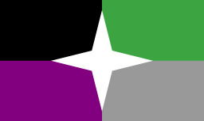 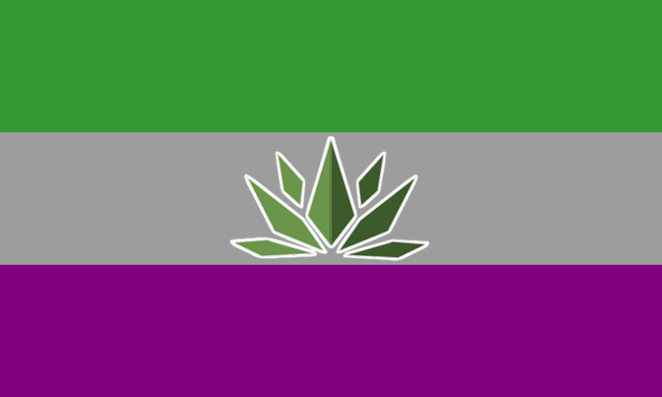
Asexual, Aromantic
An umbrella term referring to the aromantic spectrum and the asexual spectrum. Using it only with reference to asexuality is mistaken and leads to aromantic erasure.
AAA, triple A, aroace agender
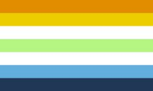 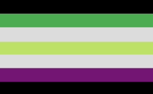
Aro + Ace + Agender
An identity that combines "aro" (for aromantic spectrum), "ace" (for asexual spectrum), and "agender" (for agender spectrum). Aroace agender can be used for any individual who identifies with all three spectrums. They do not need to fully identify with all of the terms.
Abinary, Aphorian
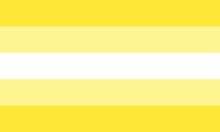
From Ancient Greek negative prefix a-, and English binary
An umbrella term referring to all gender identities that are completely unrelated to masculinity, femininity and everything between the two.
Aboy, amasculine, a-boy, a-masculine
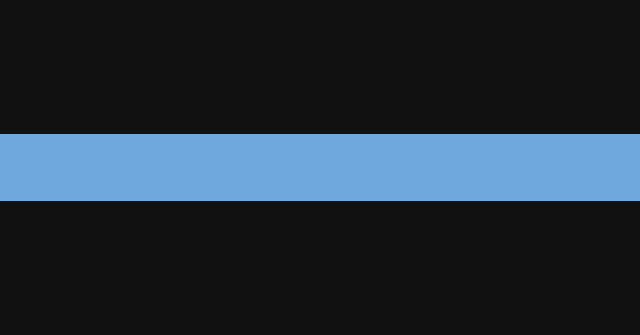
A (not, without) + boy
A person who is agender/non-binary, but has no problem with being/wants to be perceived as masculine. Do not confuse with demiboy or libramasculine, as an aboy is not (partially) male, but is fine with such perception or wants to be perceived as such. May overlap with transmasculine for some people.
Abrogender
The prefix abro- is derived either from the Ancient Greek word ἁβρός (habrós) or its Modern Greek descendant αβρός (avrós), meaning "delicate" or "graceful".
Where one's gender is constantly changing and cannot be pinned down. Where someone has so many tiny aspects to one's gender that the individual feels that they are continuously discovering it.
Abroromantic
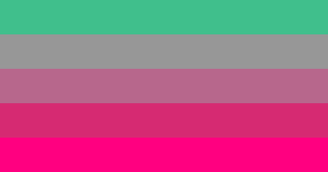 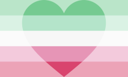
From Ancient Greek habros - “delicate”
A romantic orientation characterized by fluidity of one’s romantic attraction.
Abrosexual
From Ancient Greek habros - “delicate”
A sexual orientation characterized by fluidity of one’s sexual attraction, flowing, either constantly or occasionally.
Absgender
A gender modality that refers to when one is between, beyond or removed from cisgender/transgender dichotomy, and alternatively meaning a gender that is neither cisgender nor transgender.
Ace

Shortening of asexual
A slang term for an asexual person. Some aces use playing cards suits as symbols of their orientation. Ace of hearts (♥) is most often used by alloromantic aces; ace of spades (♠) - by aroace=aro-aces; ace of diamonds (♦) is used by demiromantic and demisexual people; finally, ace of clubs (♣) is used by grayromantic and grayasexual people.
Ace-jump, acejump
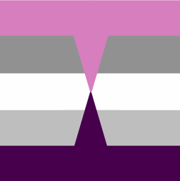 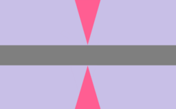
An orientation where one is normally allosexual, but one occasionally experiences rare, sudden, and intense spikes of total or near total asexual=asexuality for a short amount of time, before returning just as suddenly to one's normal amounts of allosexuality. It can be thought of as the opposite of acespike.
Aceflux
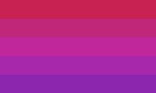 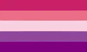 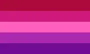
“ace” (shortening of asexual) + “flux”
A sexual orientation on the asexual spectrum. It is defined as someone whose sexual orientation fluctuates but generally stays on the asexual spectrum. An aceflux individual may feel very strongly asexual one day and less asexual another day, they might feel demisexual or greysexual at times. Some aceflux individuals may feel like they are allosexual at times.
Acephobia, Aphobia, Asexualphobia
From ace (a slang term for an asexual person) and Ancient Greek φόβος phóbos - "fear"
Negative attitudes and prejudice against asexuality and people on the asexual spectrum often rooted in ignorance, out-dated medical knowledge, amato- and heteronormativity. Acephobia may include viewing asexuality as a mental disorder and asexual people as cold and/or incapable of love, as well as excluding them from the LGBT and queer communities.
Acespike
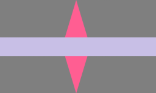
Ace from asexual + spike
Someone who usually feels little to no sexual attraction, but occasionally has rare and sudden spikes of sexual attraction.
Achillean, MLM, men loving men
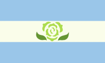
A term designating men’s and male aligned non-binary people’s attraction towards other men and male-aligned non-binary people, regardless of orientation (it’s inclusive of homosexual, bisexual etc. masculine people). The achillean flag features a , a symbol of man to man love popularized by . The name ‘achillean’ derives from the mythical hero , who, according to was in a relationship with another man, .
Achilleangender, achillegender
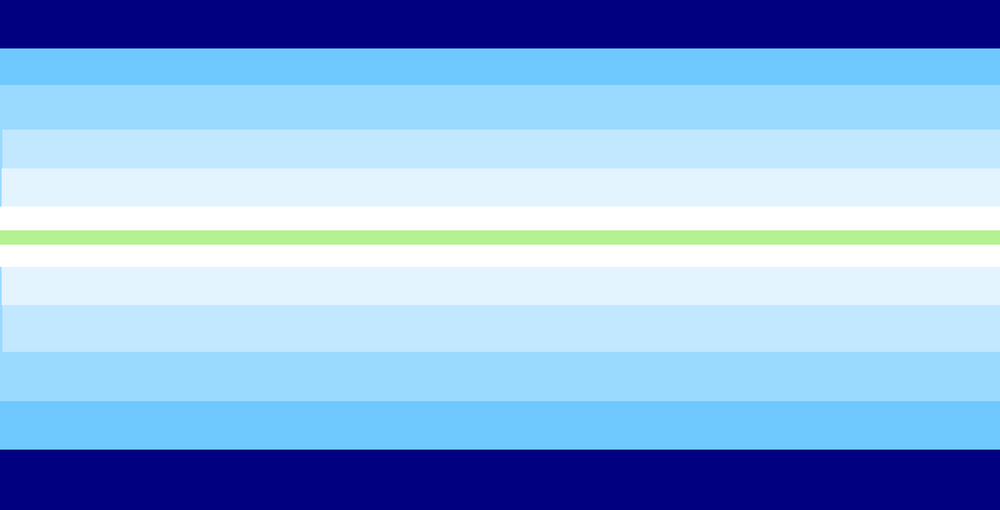
A masculine orientationgender in which one’s achillean orientation has a strong influence on one’s gender identity. Achilleangender people feel no connection to heteronormative masculinity, which is strongly associated with attraction to women.
Adgender
A gender modality that refers to someone who moves towards a given gender, or gender presentation. It is slightly more inclusive than terms like transmasculine and transfeminine as it includes those who wouldn't be included under the transgender umbrella.
ADHDgender, ADHDic
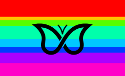
A neurogender where one feels like their gender is strongly impacted by and/or connected to their ADHD. Similar to Autigender. This gender is exclusive to people who have ADHD.
Aegoromantic, anegoromantic, autochorisromantic
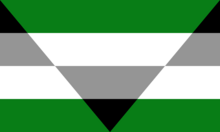
Latin "a" and "ego", meaning "without self", ancient Greek "auto" and "khoris", meaning "without self"
A microlabel on the aromantic spectrum that describes those who enjoy the concept of romance, but have a disconnection between themself, and the subject of romantic fantasies. Aegoromantic individuals may have romantic fantasies, enjoy romantic media, or engage in shipping in fandoms, but they tend to feel little to no romantic attraction in real life and typically do not desire a romantic relationship.
Aegosexual, anegosexual, autochorissexual
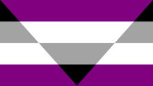
A microlabel on the asexual spectrum that describes individuals who experience a disconnect between themselves, and the subject of arousal. Aegosexuals may experience sexual fantasies, enjoy porn and other sexual content, read smut, or masturbate, but they generally feel little to no sexual attraction and typically do not desire to involve themselves in sex with another individual.
Aesthetic attraction
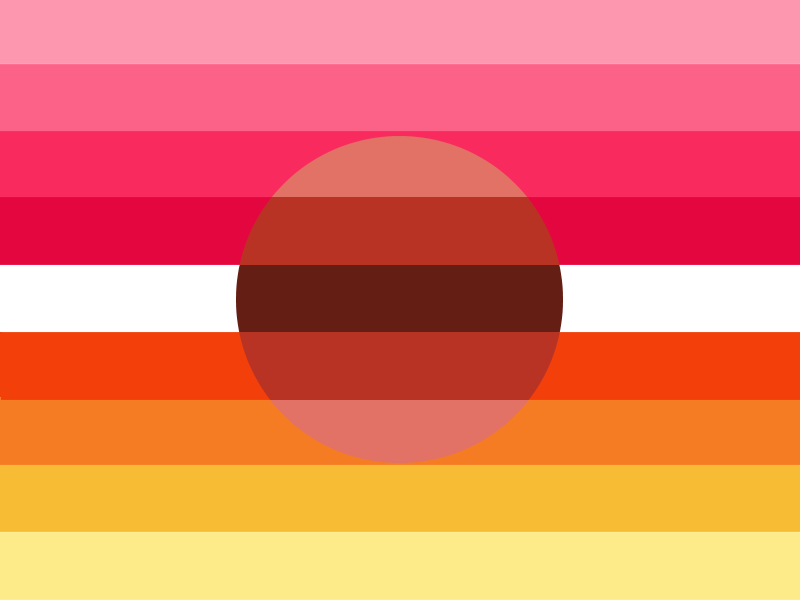 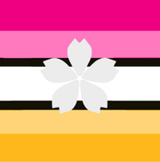 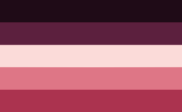
From Ancient Greek αἰσθητικός aisthetikos - “perceptible”
A type of attraction involving a desire to look at someone as it is aesthetically pleasing; often compared to the feeling one experiences when watching a beautiful view or a work of art. A person can be aesthetically attracted to someones look or style while not exactly being romantically or sexually attracted to them.
Aesthetigender
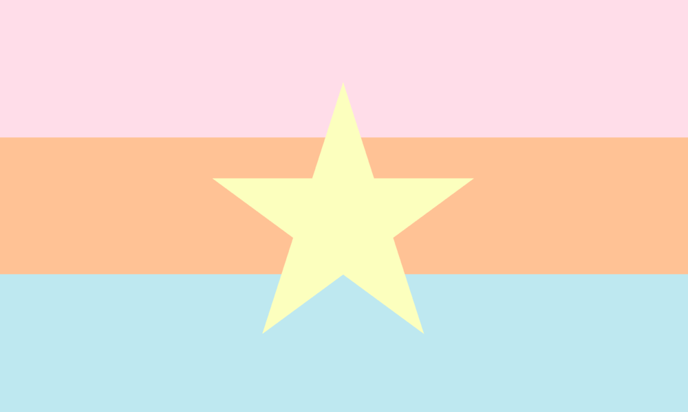
A type of xenogender identity. It refers to identities which can be described by referrence to a certain aesthetic, a sensual experience, appearance.
AFAB, Assigned female at birth
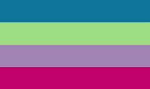
Having female as one’s gender assigned at birth.
AGAB, assigned gender at birth
The gender one is assigned in one’s birth certificate (and, in consquence, other legal documents later in life). Typically, the assignment is made based on the appearance of an infant’s external genitals.
Agender spectrum, agen spectrum, agenspec, agen-spec, agiaspec, agingender
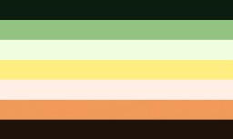 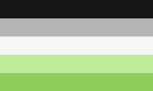 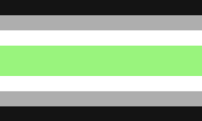
An umbrella term for various types of gender identities related to agender in some way, or otherwise on a spectrum for agender/genderless to gendered. This can include labels such as demigender, genderflux, graygender, libragender, agenderfluid, and so on.
Agender, Genderless, No gender
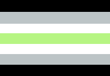
An agender person is neither a woman, a man, nor any other gender. Being agender can be defined as having no gender identity. Some feeling that they identify more as a person rather than a gender, or feeling genderless, or maybe just not in the gender binary. Agender or genderless people can also self-identify as gender-neutral, not identifying whatsoever as male or female.
Agenderfluid
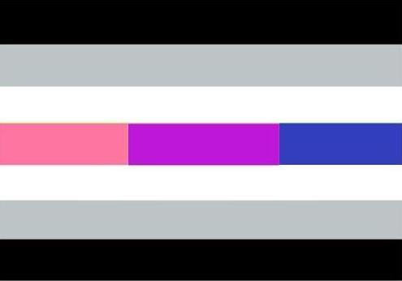
A genderfluid form of agender in which one is fluid between agender and its spectrum. Someone who is agenderfluid can feel other genders but it always returns back to agender. Some may explain it as agender being its 'base gender', or that their gender is fluid but always partly agender.
Agenderflux, librafluid
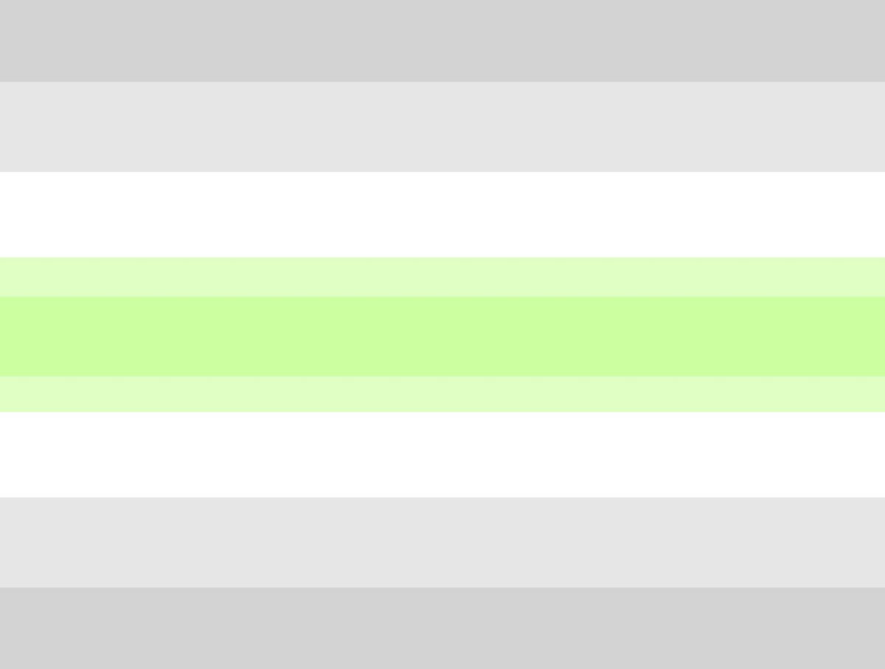 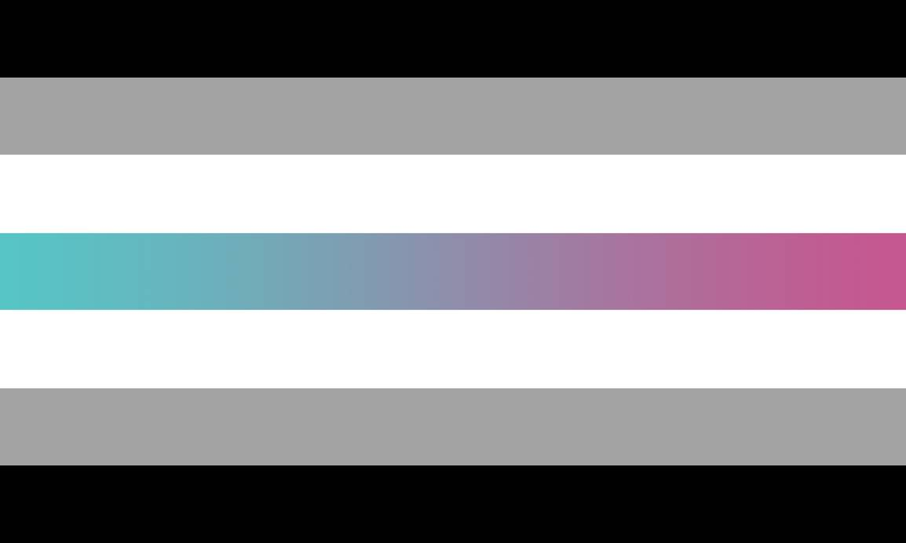
A gender in which one is mostly agender, but has a partial connection to a gender and that gender is fluctuating. With agender being the “static” part, and the agender part outweighing the fluid part.
Agirl, afeminine, a-girl, a-feminine
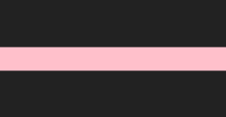
A (not, without) + girl
A person who is agender/non-binary, but has no problem with/wants to be perceived as feminine. Do not confuse with demigirl or librafeminine, as an agirl is not (partially) female, but is fine with such perception or wants to be perceived as such. May overlap with transfeminine for some people.
AIAB, AXAB
Having intersex as one's gender assigned at birth.
Aldernic
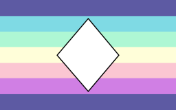 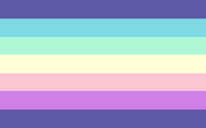
An umbrella term for people who have, or wish to have, a body that deviates from what they currently have, what is expected in society, or typical human notions in general.
Alloromantic
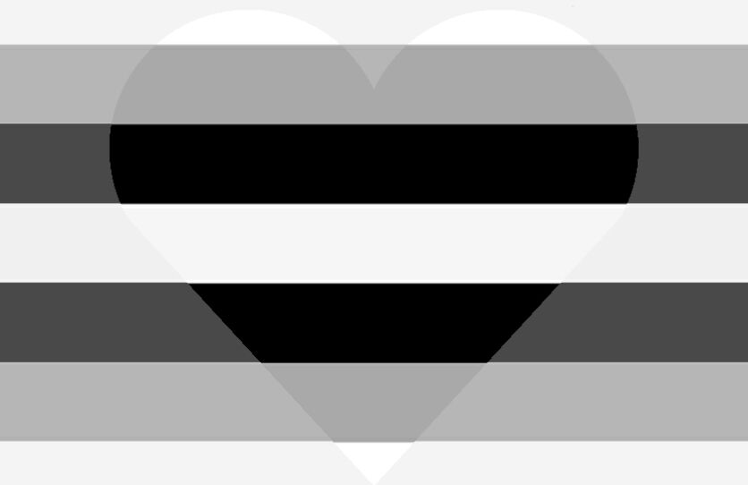
Ancient Greek ἄλλος allos - “other” + romantic
A term designating those who experience primary romantic attraction.
Alloromantic asexual, alloace, allo-ace

A person who experiences romantic attraction but experiences little to no sexual attraction, or is on the asexual spectrum.
Allosexism
From Ancient Greek ἄλλος allos - “other”
The idea that everyone experiences (and/or should experience) sexual attraction leading to discrimination of people on the asexual spectrum.
Allosexual
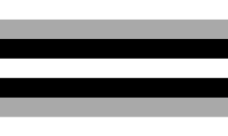 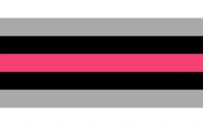
Ancient Greek ἄλλος allos - “other” + sexual
A term coined by people on the asexual spectrum to describe those who do experience primary sexual attraction.
Alterous attraction
 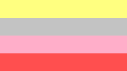
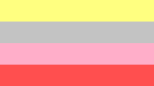
A type of attraction involving a desire for emotional intimacy with another person, that intimacy not necessarily being romantic and not necessarily platonic, but something in-between. "Alterous" can be used as a suffix in word like "panalterous", "heteroalterous" etc.
AMAB, Assigned male at birth
Having “male” as one’s gender assigned at birth.
Amatonormativity
From Latin amatus - “loved” and norma “norm/rule”
A term by philosopher Elizabeth Brake. It refers to the commonly held conviction that every person desires a stable monogamous sexual and romantic partnership. It excludes polyamorous, asexual and aromantic people, among others.
Amatopunk
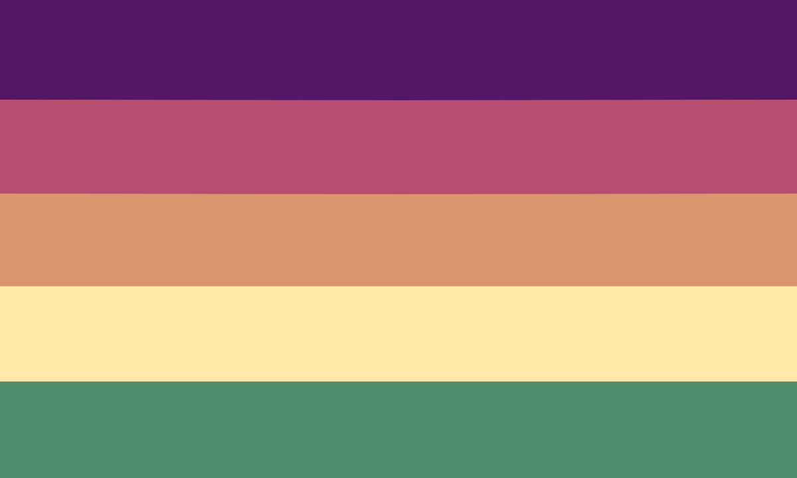
A subculture challenging notions of what it happens to mean to be within a relationship, defining love, and how important each form of it is to society. It is against amatonormativity, and how society views a-spec people, polyamorous individuals, and all those who don't fit the "right" mold.
Ambiamory, ambiamorous
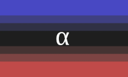
From Latin ambi - “on both sides” and amor - “love”
Being open to both monoamorous and polyamorous relationships with little to no preference for either.
Ambonec
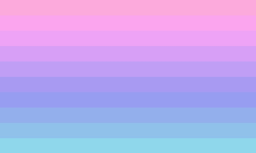
Latin "ambo", meaning "both", latin "nec", meaning "neither"
A non-binary gender where one is both a man, a woman, and neither.
Amicagender

A genderfluid identity where one's gender changes depending on which individual or group they are with. It is similar to using mirror pronouns.
Amid
A label for someone who isn’t strictly aromantic or asexual, but on the spectrum of both asexuality and aromanticism.
Anaesthetic, a-aesthetic, nonaesthetic, Acesthetic
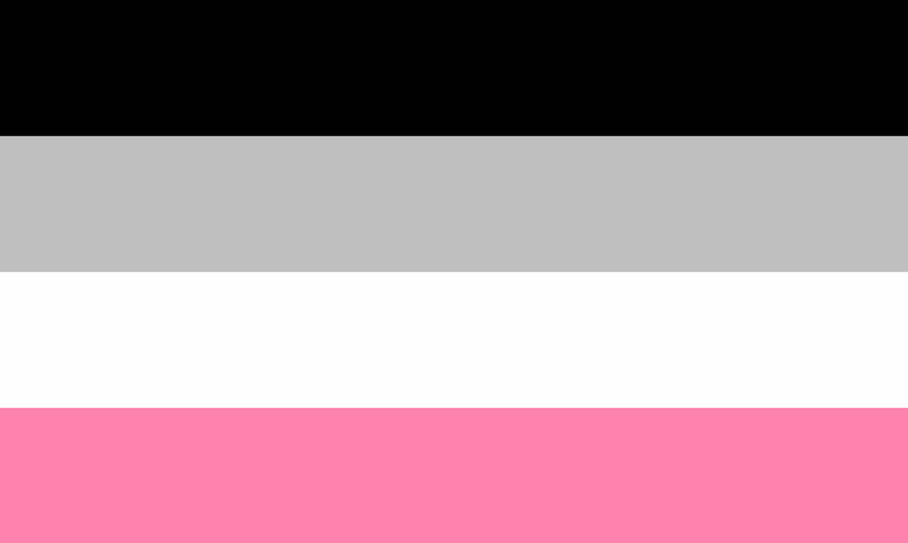
Not experiencing aesthetic attraction.
Anarchogender
A non-binary gender characterized by a rejection of the gender binary and its social hierarchy. Alternatively, it can be defined as that being an anarchist affects your perception of gender. It could also mean one's gender is just anarchy (as a xenogender). Can be considered a form of genderfuck or genderpunk.
Anattractional spectrum, aspec, a-spectrum
A wide spectrum of orientations that involve feeling little to no attraction on one or more axes. This includes the orientations asexual, aromantic, aplatonic, and forms of tertiary attraction. Aspec may sometimes be used only refer to the asexual spectrum or the aroace spectrum, though "aspec" includes all anattractional identities.
Androflexible
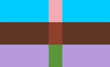
From Ancient Greek aner - “man” and Latin - “I bend”)
A term for a person who is mostly attracted to men but very occasionally feels attraction toward women or other genders. It can also mean attraction mostly to masculinity but very occasionally towards femininity or other gender alignments.
Androgyne
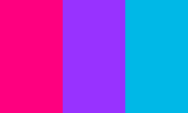
From Ancient Greek γυνή gyne - “woman” and ἀνήρ aner - “man”
A non-binary gender identity associated with androgyny. Androgynes have a gender which is simultaneously feminine and masculine, although not necessarily in equal amounts, or in between male/masculine and female/feminine.
Androgynos
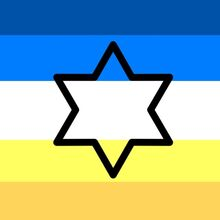
Hebrew אַנְדְּרוֹגִינוֹס from Ancient Greek ἀνδρόγυνος androgynos - “eunuch”, “a feminine man”, "intersex"
A gender identity existing in Jewish culture. In Jewish writings, the term was most probably applied to intersex people with both masculine and feminine anatomical traits. Currently it is used by non-binary and intersex Jewish people who view it as representing their experiences with sex and/or gender.
Androgyny, androgynous
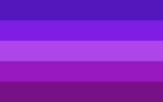
Ancient Greek ἀνδρόγυνος androgynos - “eunuch”, “a feminine man”, "intersex"; γυνή gyne - “woman”, ἀνήρ aner - “man”
Having both feminine and masculine traits, with regards to physical features, appearance, behaviour, and gender roles.
Androromantic
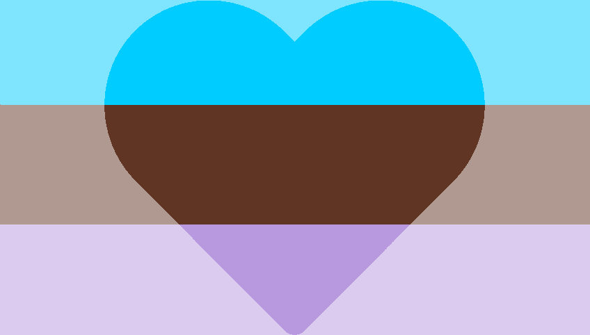
Ancient Greek aner - “man” + romantic
Experiencing romantic attraction towards men. Alternatively, the term means attraction towards masculine presenting people of various or all genders.
Androsexual
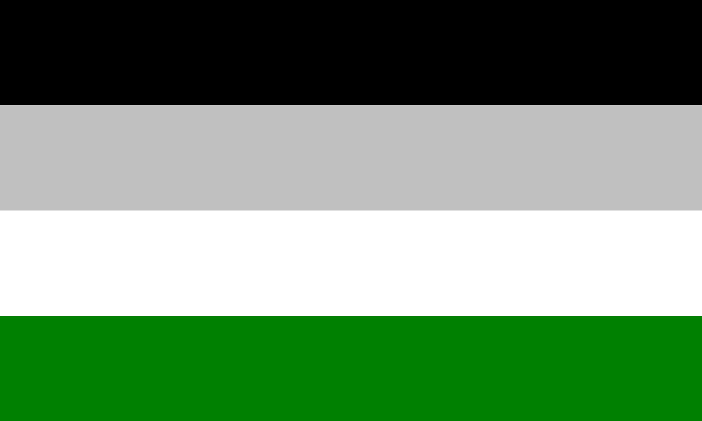 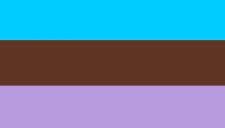
Ancient Greek aner - “man” + sexual
Sexual attraction towards men. Alternatively, the term means attraction towards masculine presenting people of various or all genders.
Angled aroace, angled aro-ace
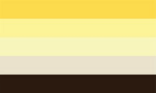
An individual that is both ace-spec and aro-spec (not necessarily strictly aromantic and asexual) who experiences some form of attraction (tertiary, sexual, or romantic) that they feel is significant enough to warrant a place alongside their aro-spec and ace-spec identities.
Anonbinary
A term referring to gender identities that are neither binary nor non-binary. It may include identities that aren't defined by how they relate to the gender binary.
Antibinary, anti-binary
A gender identity that is in direct opposition to or unaffiliated with the European (particularly North-Western European) concepts of gender and the gender binary. Can only be used by people affected by European imperialism, such as Indigenous, Brown, Asian, and Black people. Can also be used by Jewish people, because the Talmud recognized six different genders, bound by various societal norms.
Apagender, gender apathetic
When a person really doesn't identify as any particular gender, nor do they care as being seen and/or known as a certain gender. They are fine passing off as whatever and do not have an opinion towards their own gender. This is different than agender in that they may have a gender, they just don't particularly identify with it nor/or care for it.
Aphobia
A (a shortening for aromantic and asexual) + Ancient Greek φόβος phóbos - “fear"
Prejudice against aromantic and asexual people. It often involves excluding them from the LGBTQIA community. The term is commonly used interchangeably with the word acephobia, which is mistaken and an example of aromantic erasure.
Aplatonic
A term used to describe people who do not experience platonic attraction. Specifically, it is most commonly employed by aplatonic people to describe a lack of desire to form friendships with specific people, or difficulty forming friendships in general as a result of neurodivergence or trauma.
Aplatonic spectrum, aplspec
An umbrella term for people who do not experience platonic attraction, experience it rarely or only in certain circumstances.
Apogender
Apo (Greek) - away from, separate
A subset of agender in which one feels not only genderless but entirely removed from the concept of gender. May overlap with unlabeled at times.
Apopronouns
Prefix comes from "αποσύνδεση (aposýndesi)", vaguely meaning "disconnection" in greek.
Pronouns that aren’t connected to your sex or gender, such as, but not limited to, a cis woman using they/them rather than traditionally feminine pronouns, using he/him instead of they/them or it/its as a non-binary person, or she/her as a transmasc person. Using this term is obviously optional for those who have differing pronouns, but was made to help people who don't quite understand that sex doesn't equal gender and that gender doesn't equal pronouns in all cases.
Aporagender
From Ancient Greek ἄπορος aporos - “difficult” or ἀπό (apo) - “away from”
A gender identity that is neither masculine, feminine or inbetween the two but nonetheless involves a strong sense of gender; a term similar to maverique.
Apothiromantic, Romance-repulsed
A microlabel on the aromantic spectrum. It is another word for romance repulsed. For some apothiromantics, they are repulsed at the idea of engaging in romance themselves, but are fine with romance that does not involve them. Others may be repulsed by the idea of romance in general. Those who are apothiromantic typically do not seek out romantic relationships and many dislike romantically coded actions such as kissing, or cuddling.
Apothisexual, sex-repulsed
A microlabel on the asexual spectrum. For some apothisexuals, they are averse to the idea of engaging in sex themselves, but are fine with sexual activity that does not involve them. Others may be repulsed by the idea of sex in general. Those who are apothisexual typically do not seek out sexual relationships.
ARCflux, sex-oscillating, sex-ambivalent
ARC - Averse, Repulsed, or Conflicted
A term under the asexual spectrum for a person whose attitude towards sex/sex-related things can fluctuate. It can go from being completely sex-repulsed to being open and happy to engage in sexual activities.
Archaeopronouns
From Ancient Greek ἀρχαῖος arkhaios - “ancient”
Gendered pronouns and other gender linguistic forms that are/have been considered obsolete in a given language, but which are used by queer people.
Aro-ace, aroace
Shortening of aromantic and asexual
Someone who's both in the aromantic and asexual spectrum.
Aro-jump, arojump
A romantic orientation where one is normally alloromantic, but one occasionally experiences rare, sudden, and intense spikes of total or near total aromanticism for a short amount of time, before returning just as suddenly to one's normal amounts of alloromanticism. It can be thought of as the opposite of arospike.
Aroaceflux
A sexuality where someone is both aceflux and aroflux. Both their sexual and romantic orientation fluctuates, but generally stays on the asexual and aromantic spectrums. These fluctuations may occur at the same time or they may be independent.
Aroacespike
Someone who usually feels little to no romantic and sexual attraction, but occasionally has rare and sudden spikes of romantic and/or sexual attraction.
Aroflex
Experiencing a less intense, consistent form of attraction that is somewhere between romantic and queerplatonic attraction, while one’s feelings towards romance/romantic gestures fluctuates.
Aroflux
“aro” (shortening of aromantic + “flux”
A term describing a romantic orientation on the aromantic spectrum.
There are two commonly used definitions:
1. A romantic orientation that fluctuates, but always remains on the aromantic spectrum.
2. A romantic orientation that fluctuates between being alloromantic, aromantic, and anything in between the two.
Don't confuse with abrosexual/abroromantic, as most aroflux people's romantic attraction almost always stays on the aromantic spectrum and it is not about who you are attracted to.
Aromantic

1. A term designating people whose experience with romance is disconnected from societal expectations, typically due to a lack of or very low romantic attraction, seeing the idea of romance as repulsive, or lack of interest in romantic relationships. 2. A term designating people who do not experience romantic attraction whatsoever.
Aromantic allosexual, aroallo, allo-aro, aro-allo, alloaro

From allosexual + aromantic
Terms designating people on the aromantic spectrum who are also allosexual, i.e. they experience sexual attraction and are not on the asexual spectrum.
Aromantic erasure
An example of arophobia, rooted in amatonormativity; excluding and/or invisibilizing aromantic people in/from the LGBTQ+ community, claiming that every person experiences romantic love, referring only to asexual people when talking about the aspec community.
Aromantic spectrum, arospec, aro-spec, aro spectrum
An umbrella term for various types of aromantic orientations, e.g. demiromantic or greyaromantic.
Arophobia
Aromantic + Ancient Greek φόβος phóbos - "fear"
Negative attitudes and prejudice against aromanticism and people on the aromantic spectrum rooted in ignorance, irrational fears, amato- and heteronormativity. Arophobia often includes a conviction that being aromantic is a mental disorder and/or that aromantic people are cold and inhuman.
Arospike

Aro from aromantic + spike
Someone who usually feels little to no romantic attraction, but occasionally has rare and sudden spikes of romantic attraction.
Artemian
Part of the Galactian Alignment System, Artemian describes someone who is fem(inine)-aligned. this includes partially fingendered folks, those who are connected to femininity (with or without actually being fingender), someone whose gender experiences are similar to fingendered people, etc. a subset of lunarian.
Asensual
A type of sensual orientation characterized by lack of sensual attraction. An asensual person may be uninterested or averse towards touch.
Asexual erasure
An example of acephobia; excluding/invisblizing asexual people in/from the LGBT community by claiming that either asexuality does not exist or that asexual people do not belong in the community; while not exclusive to asexual-exclusionists, many would often read the A in the LGBTQIA acronym as standing for allies, instead of asexual, aromantic, agender and abrosexual .
Asexual spectrum, ace spectrum, acespec, ace-spec
An umbrella term for various types of asexual orientations such as demisexual, grayasexual, etc.
Asexual, ace

A sexual orientation characterized by lack of or non-existent sexual attraction. Asexual people can have sexual desires (libido), but not a real sexual attraction to people. Asexual people are often called aces.
Aspect-aligned gender spectrum
A system of terms used to describe genders that feel different aspects in nature. Aspect-Aligned Genders include: mingender, fingender, ningender and so on.
Athenian, minervan
A term designating those people who do not experience at least one type of attraction. It includes such orientations as asexuality, asensuality, and aromanticism. The name derives from the Greek goddess Athena (Roman Minerva) who could be interpreted as asexual and/or aromantic.
Atrinary, aternary, atertiary
From Ancient Greek negative prefix a- + Late Latin consisting of three things
An umbrella term referring to all gender identities that are completely unrelated to masculinity, femininity, neutrality, androgyny, or anything between the four.
Aurorian
In the galactian alignment system it is a term referring to non-binary gender identities that are fluid. The name derives from the word for dawn, which is the time in between day and night.
Autiaromantic, autiaro
Autistic + aromantic
A romantic identity on the aromantic spectrum in which one's autistic traits affect one's romantic orientation/lack of romantic attraction. Autiaro is not autism as an orientation, but rather an aromantic identity that is so heavily affected by or influenced by one's autistic traits, that one's aromanticism and one's experience of being autistic cannot be unlinked from each other. Exclusive to people on the autism spectrum.
Autiasexual, autiace
Autism + asexual
A sexual identity on the asexual spectrum in which one's autistic traits affect one's sexual orientation/lack of sexual attraction. Autiace is not autism as an orientation, but rather an asexual identity that is so heavily affected by or influenced by one's autistic traits, that one's asexuality and one's experience of being autistic cannot be unlinked from each other.
Autiboy
A masculine neurogender which can only be understood in the context of being autistic or when one's autism greatly affects one's gender or how one experiences gender.
Autigender
A gender identity which is influenced by one's being on the autism spectrum. For some autistic people, their experience of gender is connected to their .
Autigirl
A feminine neurogender which can only be understood in the context of being autistic or when one's autism greatly affects one's gender or how one experiences gender.
Autoromantic
"auto" - self
A romantic orientation where the individual feels attraction to themselves, exclusively or not.
Autosexual
"auto" - self
A sexual orientation on the asexual spectrum when one experiences sexual attraction primarily or exclusively towards oneself.
Axolotlgender

A xenogender in which someone feels a strong connection to axolotls or other salamanders, either strongly identifying with them or simply wanting to incorporate them into their gender to better understand their identity.
Ay'lonit
Hebrew איילונית - "infertile woman"
A gender identity existing in Jewish culture. The term designates an AFAB person who later in life exhibits masculine traits. Historically it was most probably used with reference to intersex people who did not develop female traits during puberty and who were infertile. Nowadays, it is used by some Jewish transgender, non-binary and intersex people.
Azurgirl, mingirl
An umbrella term for all identities that involve being both a girl and masculine. This includes masculine-aligned women and women who present masculinely. Azurgirls consider themselves a girl or have a connection to womanhood, but they also have a connection to masculinity, either in their gender or their gender expression.
Baby gay, baby trans, baby lesbian
A (most often young) queer person who has just come out or started exploring their orientation and/or gender. Baby queers often are keenly interested in LGBT+ issues and discourse, they wear many pride accessories and use cultural codes signaling their membership in the queer community.
Baklâ, bayot, agi
Possibly from babaylan - a pre-colonial term for a shamaness
A Filipino third gender. The term refers to AMAB people who have feminine gender expression. Many baklâ are attracted to men. They have been present in the Filipino culture since pre-colonial times when they used to be spiritual leaders and shamanesses.
Bambi bisexual, Bambi bi
A bisexual person who prefers affectionate and/or sensual acts of endearment over sexual ones. This term is used by some bi asexuals and other ace-spec multiromantics.
Bambi gay, bunny gay

A gay person who prefers affectionate and/or sensual acts of endearment over sexual ones. This term is used by some gay asexuals and other a-spec gay achilleans.
Bambi lesbian, Bambi sapphic
A lesbian who prefers sensual acts of endearment over sexual ones. This term is used by some asexual lesbians and other ace-spec sapphics.
Bear
A gay man or male-aligned non-binary person who exhibits traditionally masculine physical traits and gender expression. A typical bear is a stocky, fat, or muscular person with abundant body hair.
Beard
A fake partner/companion whose presence is expected to hide one’s (most often homosexual) orientation
Bellusromantic
Someone who enjoys typically romantic actions (kissing, cuddling, etc.) but in a platonical sense and has no want for a romantic relationship.
Bellussexual
One who has interest in certain sexual actions, the aesthetic of sexual relationships, and/or aspects of sexual relationships, but does not feel sexual attraction and does not want a sexual relationship.
Bi-curious, bicurious
Curiosity about or openness to engage in relationships with people of genders different from those to which one is usually attracted.
Bi-het, bihet
A word commonly used by radical feminists and TERFs to describe bisexuals (commonly bisexual women) who are either in a male-female relationship or prefer the opposite gender. It’s used to imply that bisexual people are privileged, to degrade bisexuals, to invalidate bisexuality, and to derogatorily call bisexual people straight. This is typically used by people who think ‘straight-passing privilege’ exists. Whether or not the term can be considered a full-on slur is a subject of debate, but some bisexuals reclaim the term and the stereotype that comes with it.
Bigender
From Latin binus “twofold”
A gender identity characterized by having two separate (not necessarily binary) identities at the same time, or changing between two identities over time.
Bigender
From Latin binus “twofold”
A gender identity characterized by having two separate (not necessarily binary) identities at the same time, or changing between two identities over time.
Binder
A specialized garment used by people with breasts to flatten their chest.
Biphobia
"bi-" + Ancient Greek φόβος phóbos - "fear"
Negative attitudes and prejduce against people whose orientation belongs under the bisexual umbrella. A commonly held biphobic idea is that only heterosexuality and homosexuality exist, and bisexual people are either homosexuals afraid of coming out or straight people experimenting with sexuality. Bisexuals often face biphobia at the hands of gay and lesbian communities.
Biromantic

From Latin bis “twice” or binus “twofold”
Romantic attraction towards two or more genders, or attraction to both similar and dissimilar genders.
Bisexual

From Latin bis “twice” or binus “twofold”
Sexual attraction towards two or more genders or sexual attraction to both similar and dissimilar genders.
Bisexual erasure
Ignoring and erasing bisexuality and bisexual people from history, media, and discourse. It may involve describing bisexual people as either homo- or heterosexual. For example, the singer is often described as gay, even though he was openly bisexual.
Bisexual umbrella, m-spec, bi+
An umbrella term and spectrum, referring to orientations and identities characterized by the attraction to more than one gender, such as bisexuality, polysexual=polysexuality, omnisexual=omnisexuality, or pansexual=pansexuality. Synonymous with multisexual and multiromantic.
Bissu
Possibly from Sanskrit भिक्षु bhikṣú – "monk"
One of five genders traditionally recognized by the Bugis people of South Sulawesi in Indonesia. Bissu is an androgynous, non-binary identity; often intersex people would function as bissu. Traditonally bissu acted as priests, and until mid-twentietch century they coronated kings and queens. Nowadays, they often act as maids of honour at weddings. Unfortunately, they have faced increasing persecution (mostly at the hands of Muslim fundamentalists) and currently the number of bissu is low as people are afraid to assume this role.
Boric, binaric
An umbrella term to describe any attraction towards binary individuals. It can also be used as a stand-alone label for individuals who experience non-straight attraction to binary individuals. The label can be used by anyone who is attracted to men and/OR women but is not straight. The attraction does not have to be exclusive, so a boric individual can be attracted to non-binary individuals as well.
Boyflux, Mascflux

A fluctuating gender identity in which one experiences varying degrees of masculine identity (e.g. fluctuating between agender and male).
Burrnesha, sworn virgin
Albanian burrneshë, virgjineshe, vajzë e betuar
In (traditional Albanian law), an AFAB person who, after taking a vow of chastity, assumes a male gender role and is given rights and priviliges afforded to men. They are allowed to wear men's clothing, carry a gun, and socialize with men. They are also required to participate in a blood feud. Sworn virgins are often (though not always) referred to with masculine language forms. One may take on the sworn virgin role voluntarilly, but they may also be forced to do so by family (e.g. when there are no male heirs).
Butch
A term used in the LGBTQ community people with a masculine gender expression or identity. It often refers to lesbians, but this is not its only usage. Butch can also be a gender identity on its own.
See also: stone butch.
Caedgender, caedogender
A gender that has been "cut away" or damaged by trauma. One may have experienced a certain gender at one point, but one feels that their connection to that gender has been damaged, altered, or completely cut away after a traumatic event. This is typically associated with sufferers of PTSD or other trauma and stressor related disorders.
Caedromantic, caedoromantic
Latin prefix caedere caed - “cut off” + romantic
A microlabel on the aromantic spectrum which describes an individual who was previously alloromantic at one point, but that it has changed—or was “cut off”— due to past trauma. This label should only be used by those with trauma or PTSD.
Caedsexual , caedosexual

Latin prefix caedere caed - “cut off” + sexual
A microlabel on the asexual spectrum to describe an individual who was previously allosexual at a point in their lives, but has changed—or has been “cut off”—due to past trauma. This label should only be used by those with past trauma.
Calalai
One of five genders traditionally recognized by the Bugis people of South Sulawesi in Indonesia. Calalai are AFAB people with masculine gender expression and male gender roles. They often marry female partners and raise adopted children together.
Calypsian
A term within the galactian alignment system that describes those who are androgynous-aligned. It differs from eclipsian as eclipsian is described as being both solarian and lunarian aligned separately, while calypsian is a combination of both, making it something else entirely.
Cassgender
A gender identity where one feels that their gender is unimportant or where one is indifferent to the idea of gender. Cassgender is different from a lack of gender, as a cassgender individual might have a gender but not feel that it's an important part of their identity.
Catgender
A xenogender in which someone feels an extremely strong connection to cats or other felines, either strongly identifying with them or simply wanting to incorporate them into their gender to better understand their identity. It is used to describe a gender that feels feline. The term Catgender was created for autistic individuals in mind, but anyone may identify with catgender.
Ceteroromantic, skolioromantic

From Latin ceterus “other”, “remainder”
Romantic attraction towards non-binary and genderqueer people.
Ceterosexual, skoliosexual
From Latin ceterus “other”, “remainder”
Sexual attraction towards non-binary and genderqueer people. Alternatively, the term means attraction towards androgynous presenting people of various or all assigned genders at birth.
Chromosomal sex differentiation
Having a certain set of sex chromosomes (X and Y).
A typical woman has 46, XX karyotype, while a typical man has 46, XY. Other configurations (examples of being intersex) are also possible, such as: 45, X0 (Turner syndrome); 47, XXY (Klinefelter syndrome); 47, XXX; 47, XYY.
It is also possible to possess a mosaic karyotype ( occurs when an individual has cells of various karyotypes originating from the same zygote), e.g. 45, X0/46, XY. If a person has cells originating in different zygotes which merged into one early on, we talk about .
Finally, if a person with 46, XY karyotype lacks the SRY gene (typically found on the Y chromosome) which is crucial for the virilization of the foetus, their phenotype will be feminine. Conversly, if the SRY gene is found on one of the X chromosomes of a 46, XX person, they will have masculine phenotype (based on : 9-12).
Although medicine traditionally has (and, sadly, sometimes still does, see. interphobia) describe atypical sex characteristics as disorders, it is better to think of them as simply examples of human diversity.
Cinthean
A term that refers to men, male-aligned, and nonbinary people, who are attracted to other men, male-aligned, and non-binary people. Cinthean is based heavily off of the tale of Hyacinthus.
See: Vincian
Cis-genderless, cisgenderless, cis-by-default
The act of defaulting to one's assigned gender due to a lack of gendered feeling and possibly a lack of understanding of gender. It is similar in experience to agender, but if asked, a cis-genderless individual will give their assigned gender/sex.
Cisgender
From Latin cis “on the same side”
Identifying with one’s gender assigned at birth; the opposite of transgender.
Cisnormativity
From Latin cis “on the same side” and norma “rule, norm”
A belief that everyone is/should be cisgender and gender conforming, which leads to transphobia, enbyphobia and marginalization of non-cisgender people.
Cisn't, cisgendern't, noncisgender
A gender modality and umbrella term for anyone who is not cisgender. It is not exclusive to transgender individuals, as not all non-cis individuals identify as trans.
Cistrans, trancis
A term that’s a combination between transgender and cisgender in some way, separately or at the same time.
Closeted, in the closet
A term when someone has told very few or no individuals about their sexual orientation, romantic orientation, gender identity, or another queer identity/experience for reasons of safety, unsureness of identity, fear of acceptance, denial or others.
Coeoromantic, Coeosexual
Coeoromantic is derived from the Latin word "Coeo" meaning "Meet, unite, or have connection." The flag was designed by Reddit User Sirpurple04's friend on the 29th of April, 2021. The color meanings of the flag are currently unknown.
Coeoromantic is a romantic orientation on the aromantic spectrum that is the opposite of demiromantic. One who is coeoromantic will only experience romantic attraction to someone if they developed that feeling upon meeting them the first time, and is similar to the concept of "Love at First Sight".
The attraction can be as intense as attraction in a relationship that has been built up over years. Coeoromantic individuals can still become attracted to those they know, but it is more common for them to develop romantic feelings to those they don't know or have just met.
The same goes for Coeosexual, where an individual typically develops sexual feelings towards someone they don't know well.
Coming out, coming out of the closet
The process of disclosing one's non-normative orientation, gender identity, or some other identity to one's friends, loved ones, coworkers etc.
Comphet, compulsory heterosexuality
The process of enforcing heterosexuality on people and painting it as the default (or the only possible) orientation, which leads non-heterosexual people to entering (only) heterosexual relationships. The term was first used by a feminist theorist and poet Adrienne Rich in her 1980 essay "". The term "comphet" is used by lesbians, as well as other non-heteros, to describe the difficulties of realizing their actual orientation while living in a patriarchal society.
Contrastgender
Contrast + gender
An umbrella term for those who are multigender or xenogender who have some or all of their genders contradict or be opposite with one another. A term often used by gender collectors.
Conversion therapy
Practices aimed at changing the sexual orientation and/or gender idenity of non-heterosexual and non-cisgender people. There is no evidence that the practices work; moreover, it has been shown that they may contribute to depression and other psychological disorders as well as to suicidal ideation and attempts in (see, e.g. : 5-10). They have been by the International Rehabilitation Council for Torture Victims and in over 20 countries.
Cross-dressing
Wearing of clothes which are associated with another gender in a given society. Cross-dressing may be a part of an artistic performance (e.g. drag) or a way of one's self-expression. One does not need to be transgender to cross-dress.
Cross-dressing
Wearing of clothes which are associated with another gender in a given society. Cross-dressing may be a part of an artistic performance (e.g. drag) or a way of one's self-expression. One does not need to be transgender to cross-dress.
A transgender person dressing in clothing associated with their gender identity is not considered cross-dressing, even if the individual is yet to transition.
Cupioromantic
From Latin cupio - “I desire / I long for” + romantic
A romantic orientation from the aromantic spectrum. A cupioromantic person experiences little to no romantic attraction, but they desire a romantic relationship with another person.
Cupiosexual
From Latin cupio - “I desire / I long for” + sexual
A sexual orientation on the asexual spectrum. A cupiosexual person experiences little to no sexual attraction, but they desire a sexual relationship with another person, or engage in sexual behavior.
Cusper
An identity defined by feeling like one is on the "cusp" between being transgender and a gender non-conforming cisgender individual, or between binary genders in general.
Deadname, necronym
A person's old name (typically the one given them by parents and present in their birth certificate) which they no longer use. The term is used mostly with reference to transgender people. Deliberate use of a person's dead name is often interpreted as a form of hatred by transgender individuals. that respecting trans people's names improves their mental health and well-being.
Dehuman pronouns
An umbrella term for all pronouns that can be seen as dehumanizing, anti-human, etc. As well as pronouns that are used because one isn't human, doesn't want to be human and/or doesn't want to use humanizing terms.
Dehuman pronouns include it/its, that/thats, thing/things, null/nulls, and no pronouns.
Delloromantic
Someone who experiences attraction to multiple genders and experiences alloromantic style attraction to some genders, but is demiromantic towards other genders.
Dellosexual
Feeling allosexual attraction towards some genders, whilst being demisexual towards other genders.
Demian, Demiaroace, Demirose
From Latin dimidius "half/halved”
A term designating people who are both demiromantic and demisexual, i.e. in order to feel romantically and/or sexually attracted to someone, they need to establish a strong emotional bond.
Demiboy, demiman, demiguy
From Latin dimidius "half/halved" + boy
A gender identity that is partially, but not fully, a boy or a man. They may or may not identify as other genders in addition to being partially a boy or man. The other part of one's gender can be any gender or combination of genders, including a lack of gender or agender.
Demicisgender
A gender modality in which one identifies partially as their assigned gender at birth, and partially as something else. For example, an AFAB person can identify as a demigirl; demigirl would make one partly cisgender. The other part can be any gender, including agender.
Demifluid
From Latin dimidius "half/halved" + fluid
A gender identity that is partially fluid. It can also mean an experience in which one gender is partially fluid and any others are static.
Demiflux
From Latin dimidius "half/halved" + flux
A gender identity in which one gender is static, and any others fluctuate in intensity.
Demigender
From Latin dimidius "half/halved" + gender
A gender identity that involves only a partial connection or identification with a certain gender, or partial connection to gender itself. It may also be used as an umbrella term for gender identities which are partially connected with other genders (e.g. demigirl, demineutrois, demiboy).
Demigirl, demiwoman, demigal, demilady, demifemme
From Latin dimidius "half/halved" + girl
A gender identity that is partially, but not fully, a girl or a woman. They may or may not identify as other genders in addition to being partially a girl or woman. The other part of one's gender can be any gender or combination of genders, including a lack of gender or agender.
Deminonbinary, demienby
From Latin dimidius "half/halved" + non-binary
A gender identity that is partially non-binary.
Demiromantic
From Latin dimidius "half/halved" + romantic
A romantic orientation on the aromantic spectrum. A demiromantic person can experience romantic attraction only after forming a strong emotional bond with someone.
Demisexual
From Latin dimidius "half/halved" + sexual
A sexual orientation on the asexual spectrum. A demisexual person may experience sexual attraction to someone only after forming a strong emotional bond with them.
Demitrans, demitransgender
A gender modality in which one identifies partially, but not completely as transgender, due to being partly their assigned gender at birth, and partially as something else.
For example, an AFAB demigirl could identify as demitransgender because they are partly their assigned gender and partly something else. The other part of one's gender can be any gender(s), including binary, non-binary and agender for instance.
Demixenogender, demix

A gender in which one is partially, but not fully any given xenogender. One may or may not identify as another gender in addition to identifying as partially any given xenogender.
Detransition
The social, legal and/or medical process of undoing part or all of one's transition. Detransition is possible only to a certain extent as some changes caused by hormone replacement therapy and surgeries are irreversible. The percentage of detransitioners is considerably low, lower than 1%; Danker et al. () provide a figure of 0,3%, Davies et al. () - of 0,47%, Wiepjes et al. () write about 0,6% of interviewed trans women and 0,3% interviewed trans men who regretted undergoing gonadectomy. The main reason reported for detransitioning is not a change or prior mistake in recognizing one's gender identity but social difficulties (discrimination or rejection by family). We may observe a tendency (especially in TERFs) to talk about an "epidemic of detransitions" in order to scare people away from transitioning, or in order to create a moral panic around being transgender, especially in regards to young trans men and AFAB non-binary people. Despite TERF propaganda, many detrans people who have had a change in gender identity and/or regret transitioning still support trans rights, with many still identifying as transgender or nonbinary.
Diamoric
From Anciet Greek δια dia - “through” and Latin amor “love”
Attraction experienced by non-binary people that cannot be described as homo- or heterosexual. The diamoric flag shows myrtle - a plant symbolizing Aphrodite and Adonis, who were sometimes portrayed as gender non-conforming.
Drag
A type of performance art in which one impersonates a person of a certain gender (typically, different than one's own). Drag performers may be of any gender identity.
Drag king
A drag performer who impersonates male/masculine characters. Drag kings are typically women, and sometimes men or non-binary people.
Drag queen
A drag performer who impersonates female/feminine characters, often by use of extravagant clothes and make-up. Drag queens are typically men, and sometimes women or non-binary people.
Drag quing, drag monarch

A type of drag performer who impersonates androgynous characters, a gender-neutral term for a drag queen/drag king.
Dreamsexual, sognaresexual, yumesexual, somniosexual
Italian "Sognare", Japanese "夢" (yume), Latin "Somnio" meaning "Dream" or "to see in dreams".
Only feeling sexual attraction during dreams, but rarely or never feeling sexual attraction when awake. It is on the asexual spectrum. Do not confuse with the fake sexuality that was going around about being sexually attracted to the Minecraft creator "Dream".
Dyadic, endosex, perisex
From Ancient Greek ἔνδον (éndon) - "inner"; from Ancient greek περί (perí) - "about", "around"
A term referring to people for whom all sex characteristics align; the opposite of intersex. Sometimes, the term "dyadic" is criticized for upholding the gender binary; that is why terms "endosex" and "perisex" have been created. However, "dyadic" seems to be the most commonly used term among English speakers.
E
First letter of estrogen, alternate spelling of oestrogen
Slang term for estrogen among trans women, transfeminine people, and non-binary people; similar to "T" for testosterone.
Eclipsian
A non-binary gender alignment from the galactian system. It is a combination of solarian and lunarian. An eclipsian individual can be fluid between the two genders or can be both at the same time.
Egg
A term that often stands for someone who hasn't realized they're trans yet, or is in denial. For example, they 'ironically' crossdress, play game characters of the opposite gender, or write stories about trans characters. Then, when they realize, it's referred to as the egg "cracking." This term is often used jokingly by trans individuals when confronting cisgender people.
Egogender, charagender, autogender
A xenogender where the only way to describe one’s gender is simply as oneself. One's gender can only be described as themselves and is therefore unique to them, may be similar to agender for some people.
Emojiself pronouns
A type of neopronouns, used only in writing. In place of one's pronouns, emojis (or other similar pictograms) are used. See an example or .
Emotional attraction, ecstatic attraction
An umbrella term that encompasses many forms of attraction that exist on an emotional level, as opposed to physical attractions such as sexual, sensual, or aesthetic attraction. Emotional attraction could be broadly considered to be a desire to form an emotional bond a specific individual.
Enbian, NBLNB
From enby
A non-binary person attracted to other non-binary people. Enbian is to nblnb what sapphic is to wlw and achillean is to mlm.
Enboy, non-binary boy, non-binary man, enby boy, nonbinary boy, nonbinary man, enbyboy
A term used by anyone who identifies as both a boy and as non-binary, such as multigender or genderfluid/genderflux people and everyone whose gender identity is connected to masculinity while also being non-binary.
Enbyflux, nonbinaryflux, nbyflux
A fluctuating gender identity in which one may fluctuate between feeling strongly gendered as non-binary, to being agender, to being anywhere in between those extremes.
Enbyphobia, binarism, exorsexism
From enby + Ancient Greek φόβος phóbos - „fear"
Negative attitudes and prejudice against non-binary and gender non-conforming people. They may be rooted in cis- and heteronormativity, lack of knowledge, irrational fears. Enbyphobic attitudes may be exhibited not only by cisgender people but also by binary transgender=trans people.
Ethical non-monogamy, ENM
An umbrella term for relationships involving more than two individuals who all give informed consent. These relationships do not have to be romantic or sexual, as it can be based off of tertiary attraction as well. Polyamory and polygamy are the two most known terms under this umbrella.
The terminology is sometimes criticised for giving in to mononormativity, by having to specify it's "ethical" whereas monogamy isn't held to such standard.
Evenic
A term for when an individual is on the boundary of two existing identities. Evenic individuals might feel like they partly or fully fall under both of the identities, or they may not identify as either of them individually.
It is similar to cusper, but more broad.
Exclusionist, exclus
Someone who attempts to gatekeep the LGBTQ+ community by claiming that certain groups aren't "really" LGBTQ+ based on their own definition. The term includes people with views based on transphobia, transmedicalism, enbyphobia, aphobia, biphobia, multiphobia, and opposition to ethical non-monogamy.
Exteramo attraction
A form of attraction that is neither romantic nor platonic or anywhere in between them, and which exists outside of the platonic-romantic spectrum.
External genital differentiation
The shape of a person's external genitals. These develop prenatally from the urogenital sinus due to the influence of hormones produced in the gonads. The 5α-reductase enzyme (produced in various places, including gonads, skin, and the nervous system) allows the testosterone produced by testes to convert into dihydrotestosterone, thanks to which the penis and scrotum develop. In case of low level of testosterone (in a foetus with ovaries), the urogenital sinus develops into the clitoris and labia. A less typical development of external genitals and/or their being "not alligned" with the internal genitals is also possible (these are various types of being intersex). Atypical levels of estro- and androgens may cause a foetus to develop "ambiguous" genitals, e.g.: micropenis/enlarged clitoris, bifid scrotum/labial fusion, hypospadias (having the urethra place not on the top of the penis but in the middle or below it), undescended testes (this happens in persons with congenital adrenal hyperplasia or with partial androgen insensitivity syndrome). The shape of one's genitals may also spontaneously change later in life. For example, in people with 46, XY karyotype and congenital 5α-reductase deficiency, internal genitals are typically male (due to the effects of testosterone), but the lack of dihydrotestosterone leads to external genitals' feminization (although they usually are not typically female). Later, during puberty, other ways of producing dihydrotestosterone activate, and thanks to its effects the clitoris grows into a penis, ejaculation appears, the labia become a scrotum into which previously undescended testes move, phenotypical male characteristics appear, and the person's gender identity (usually) becomes masculine (due to the apperance of external genitals, 46, XY people with 5α-reductase deficiensy are raised as girls) (based on : 16-17, 28-33).
Fa'afafine

Samoan "in the manner of a woman"
A traditional Samoan third gender. Fa’afafine are AMAB people who assume a female gender role and expression.
Faesari
A gender identity where one feels most comfortable within the neutral spectrum, but still feels a strong attachment/connection to femininity, it is not (necessarily) tied to being a woman. Similar identities include juxera and fegender.
Fakaleitī, leitī
Tongan faka “in the manner of” + a leitī – a borrowing of English “lady”
A Tongan third gender. Leitī are AMAB people who assume a female gender role and expression. The community itself prefers the term "leitī" or "lady" to "fakaleitī". Tonga Leitīs' Association organizes a yearly competition for leitī.
Faunagender
From “Fauna”, the Roman goddess of animals
A xenogender that is connected to/relates to animals or incorporates animal qualities. Can be used as an umbrella term for specific identities (such as catgender) or kingenders, but doesn't necessarily have to be. Mammalian, reptilian, and insectian are subparts of this gender.
Female-aligned, woman-aligned
A person whose gender identity and/or gender expression is connected with femininity or womanhood=woman.
Femboy
A feminine boy, man, or enby whose gender is conventionally feminine in nature via presentation, or otherwise has a connection to feminine attributes, elements, or concepts. May include feminine-aligned men or genders that are primarily related to femininity while not necessarily being a woman. A form of gender non-conformity. This term is sometimes used offensively or as a harmful way to refer to transfeminine people. There is debate whether or not if it is a slur, but many find this appropriate to describe their gender and gender expression. Some may self-identify as femboys, but there are also other feminine boys, men, or enbies who do not like this term. Instead, many use the term 'roseboy' to avoid controversy.
Femininity
From Latin femina - “woman”
Exhibiting characteristics associated with being a woman, possibly including anatomical features, appearance, behavior etc. What is seen as feminine differs across cultures and times as well as depends on one's personal view of womanhood.
Femme
From French femme - “woman”
A term used in the LGBTQ+ community to designate a feminine gender expression or identity that subverts one's culture's expectation of what it means to be feminine. This term is often used by lesbians and sapphics, but is not exclusive to them. It is often contrasted with being butch.
See also: stone femme
Fiaspec, fiagender
An umbrella term for anyone on the "female" side of the viabinary spectrum. This includes anyone whose gender is near female, female-aligned or adjacent, girlflux, or is similar to or in some way resembles femaleness.
Fictigender, fictogender
A term for when one's gender is connected to or based on a work of fiction, a fictional character(s), a fictional species, or an object, setting, or concept from a work of fiction. It also includes genders that come from a work of fiction.
Fictoromantic
The exclusive, near exclusive, or primary romantic attraction toward fictional characters, general type of fictional characters, or whose romantic orientation is influenced by fictional characters. Some fictoromantics may be attracted to one character, to genders separate from what they normally are or experience their attraction in a different way, or are only attracted to others in a fictional sense. Considered a part of the aromantic spectrum.
Fictosexual
The exclusive, near exclusive, or primary sexual attraction toward fictional characters, general type of fictional characters, or whose sexuality is influenced by fictional characters. Some fictosexuals may be attracted to one character, to genders separate from what they normally are or experience their attraction in a different way, or are only attracted to others in a fictional sense. Considered a part of the asexual spectrum.
Fingender
An umbrella term for all genders which are feminine in nature. Some fingenders can also be related to womanhood but not all of them are.
Fingender can also be used as a gender on its own, referring to any gender that isn't fully defined by being feminine but is still related to femininity, or a gender in which femininity is its defining feature, but is not binary woman. It's often used by individuals who cannot narrow down their gender any more than it being feminine.
Finromantic
Fin - an acronym of "feminine in nature" - + "romantic"
Romantic attraction towards femininity and feminine people. It includes attraction to women, and female-aligned non-binary people, potentially also towards feminine men.
Finsexual
Fin (an acronym of "feminine in nature") + "sexual"
Sexual attraction towards femininity and feminine people. It includes attraction to women, and female-alligned non-binary people, potentially also towards feminine men.
Flaminian, transbian
A gender-identity and sexuality that encompasses being both a transgender woman and a lesbian. Only reclaimable by MTF lesbian women, A Flamingo represents that a big appearance doesn’t mean that what’s inside is harsh. The transgender gay version of this is called Hummingbird.
Fluidflux, genderfluix
A combination of genderfluid and genderflux
Being both genderfluid and genderflux; a term signifying that one's gender identity fluctuates over time both in terms of intensity (from no sense of gender to a strong sense of gender) and alignment (e.g. between being masculine, feminine, androgynous, or neutral). These fluctuations may be random, regular, or dependent on certain conditions.
Fox pan
A pansexual/panromantic who prefers sensual acts of endearment over sexual ones. This term is used by some asexual pan people and other a-spec pan people.
Freyromantic, ignotaromantic, frayromantic

From Latin ignotus “unknown” + romantic
An orientation from the aromantic spectrum; being romantically attracted only to people with whom one has not formed a strong emotional bond. The attraction fades as the bond is formed.
Freysexual, ignotasexual, fraysexual
From Latin ignotus “unknown” + sexual
An orientation from the asexual spectrum; being attracted only to people with whom one hasn't formed a strong emotional bond. As the bond is formed, the attraction fades.
Futch
Portmanteau of "Femme" and "Butch"
A term used in the LGBTQ+ community to designate an ambiguous or genderpunk expression or role. Though less prevalent than butch and femme, it is also seen in sapphic spaces, but not exclusive to them. It is sometimes seen as in-between butch and femme, sometimes as a combination of the two. Futch can also be a gender identity on its own.
Gai, unstrayt
An orientation that is gay but in a uniquely non-binary way. It describes attraction experienced by a non-binary person that one considers to be gay or otherwise non-straight (unstraight), but is not necessarily towards the "same" gender (due to the nature of non-binary genders).
Galactian alignment system
A system for describing gender identity constructed in such a way that non-binary people do not have to describe their gender by using words such as "feminine" or "masculine". The system uses names of celestial bodies and associated deities and archetypes. It can or cannot not describe specific genders, it's usually the genders allignments. Main terms used in the system are: lunarian (for female-aligned non-binary people), solarian (for male-aligned non-binary people), aurorian (for genderfluid people), singularian (for agender/aporagender people), and spaciallian (for xenic people).
Gatekeeping
The practice of restricting access to medical transition (especially hormone replacement therapy by medical professionals - e.g. excluding non-binary people, demanding stereotypical gender expression and heterosexuality from one's clients/patients, demanding medically unnecassary but time-consuming and expensive medical tests, etc. The underlying reason for gatekeeping is the idea that the medical professionals must "diagnose" people as transgender and determine whether they are "sufficiently" trans in order to qualify for transition. An alternative model is that of informed consent, as described by Cavanaugh et al. (). In this model, the role of a healthcare provider is to explain different aspects of medical transition, including prognosed outcomes and possible risks, to the transgender person, so that the two may collaboratively decide which path is best for the client/patient.
Gay
A term referring to homosexual men. More broadly defined, it can encompass any man and/or non-binary person exclusively attracted to other men and non-binary people. It can also refer to same-gender and/or similar-gender attraction in general, though some women and non-binary people may prefer the lesbian label instead.
Gay is also used as an umbrella term. (see LGBTQ+)
Gaybian, lesbigay
Gay + lesbian
Similar to lesbihet, a term for one who considers oneself both gay and lesbian due to being both male or masculine-aligned and female or feminine-aligned (fluidly or simultaneously), and being attracted to men and women. They identify as both MLM and WLW.
Gaydar
A combination of “gay” and “radar”
A supposed ability of LGBTQ people to recognize other LGBTQ people, often based on stereotypes and cultural codes. Also a fictional device that can detect LGBTQ people (as used in The Office)
Gender binary
From Latin binarius “consisting of two things”
Phenomenon of distibution of sexes/genders into the two biggest groups. Binary genders are woman and man.
Gender dysphoria
From Ancient Greek δυσφορία “unbearable pain”
A feeling of dread or unease caused by a mismatch between one's assigned gender, gender expression, gender role, anatomy etc. and one's gender identity. Dysphoria may be alleviated through transitioning socially (changing one's name, pronouns and/or gender expression), legally (changing one's legal gender marker and/or one's legal name), and/or medically (HRT=hormonal treatment or SRS=surgery). Not every trans person experiences gender dysphoria.
Gender euphoria
From Ancient Greek εὔφορος euforos - "bearing something well"
A feeling of happiness or comfort cause by allignment of one's gender expression or gender role with one's gender identity (in terms of apperance, behavior, language etc.).
Gender expression, gender presentation
A way one expresses their gender identity, e.g. through clothing, behavior, or language.
Gender identity
The gender one experiences and identifies with. A person's gender identity may be the same as or different than their assigned gender. It may or may not align with all layers of their so-called biological sex (i.e. chromosomal, hormonal, phenotypic and genital sex differentiation. People who are of the gender they were assigned at birth are referred to as cisgender, while people who are of a different gender than the one assigned to them at birth are transgender, nonbinary, etc. It really depends on the person!
Gender modality
The correspondence between one's assigned gender at birth and one's actual gender identity. The two primary and most well-known gender modalities are cisgender and transgender. However, those are not the only possible modalities one can have. Gender modality is an open-ended category that welcomes the elaboration of further terms.
Examples: demitransgender, demicisgender, isogender or intragender.
Gender non-conforming, GNC, Gender nonconforming
A term referring to non-stereotypical gender expression, where someone does not conform to their gender or any set cultural/societal definition of it.
Gender questioning

The process of discovering and questioning one's gender identity; also an identity connected to said process.
Gender reassignment surgery, GRS, Sex reassignment surgery, SRS
Often wrongly referred to as "sex change surgery"; a term referring to various surgical procedures aimed at aligning a transgender person's body with their gender identity. It should be noted that there is no one "universal" procedure and that a given person does not have to decide for all (or any) of the options. Masculinizing surgeries include: chest reconstruction, metoidoplasty (creating a phallus from the clitoris enlarged due to testosterone therapy) or phalloplasty (creating a phallus by use of a graft from a different body part), scrotoplasty (creation of a scrotum from the labia), and panhisterectomy (removal of the uterus with ovaries and fallopian tubes). Feminizing surgeries include: chest reconstruction (if the results of estrogen therapy) are not satisfactory), vaginoplasty (creation of a vagina), orchidectomy (removal of the testes) and face feminization surgery (based on : 247-259). Non-binary people may also seek surgical reassignment procedures (see, e.g. : 255-282).
Gender recognition
The process of changing a person's legal gender marker so that it aligns with their gender identity.
Genderfae, genderdoe
Gender + fae/doe
A type of a fluid gender identity that does not include any male-aligned genders. The name comes from found in European folklore. A masculine counterpart to genderfae is genderfaun, a neutral one is genderflor and a xenic one is gendersylph.
Genderfaun
A type of a fluid gender identity that doesn't include any female-aligned genders. The name "genderfaun" comes from the mythical . A feminine counterpart to genderfaun is genderfae, a neutral one is genderflor, and a xenic one is gendersylph.
Genderflor
From Latin flor - “flower”
Form of genderfluidity in which someone is only fluid between any genders except the binary genders and aspect-aligned genders. Genderflor individuals can be fluid between a range of genders, such as neutral genders, unaligned genders, xenogenders, and alibinary gender (generally speaking) for example.
Genderfluid
A term signifying that one's gender identity changes over time. These changes may be random, regular, or dependant on certain conditions. This term does not specify which genders the person switches between.
Genderflux
A term signifying that one's gender identity fluctuates over time in terms of intensity. The fluctuations may happen in many ways, being for example extreme (from no sense of a gender to a very strong sense of gender), or modest (from a small sense of gender to a medium sense of gender). These fluctuations may be random, regular, or dependent on certain conditions.
Genderhoarder, gendercollector, hoardgender
A gender identity where one's gender is fluid but one cannot find a single term to describe what their fluid gender is, so they "hoard" various gender terms that fit how they feel.
Genderphobia
Gender + Ancient Greek φόβος phóbos - “fear”
Negative attitudes and prejudice against the topics of gender, gender identity, and those fighting for the rights of gender-variant , gender non-conforming and transgender people.
Genderpunk, genderf*ck, genderf*cked, genderfuck
A colloquial term for a culture of resistance against cisnormativity; an identity that in and of itself is a resistance against gender norms, transphobia, and social status. It is often used synonymously with gender non-conforming and is not a term limited to trans people.
Genderqueer
Gender + queer
An umbrella term describing individuals who feel that they have a queer or non-normative experience with gender, either through their gender identity, their gender presentation, or other experiences of gender.
Genderqueer loving genderqueer, genderqueer for genderqueer, GQLGQ, GQ4GQ
(genderqueer + "for," as in a person looking for or having attraction for another)
A term for genderqueer individuals who are either exclusively attracted to genderqueer individuals, or emphasize or prioritize their attraction and relationships with other qenderqueer individuals, celebrating genderqueer love. GQ4GQ people can have any sexuality as well as being GQ4GQ or just identify as GQ4GQ only. This includes trans/non-binary people, GNC people, drag artists, those with unlabeled genders, and more.
Genderselkier
A form of genderfluidity that never encompasses being fully male. Genderselkier people can be fluid between any range of female and feminine genders, masculine genders, and xenogender identities. They are never fully male. This identity is similar to genderfaer but is specifically for xenogenders/uncommon genders.
Genderspike

A gender in which one is normally a given gender, but very occasionally experiences sudden and short spikes of a different gender, before returning to one's normal "base" gender. The base gender can be any gender or combination of genders. The gender one spikes to can be any other gender or combination of genders, and it may or may not be the same gender every time.
Gendervoid
A gender identity under the kenochoric umbrella. It signifies a void/absence/emptiness in the place where one's gender identity could have been or that the person is unable to experience gender (similar to agender but hollow instead of gone). One may also feel that the void itself is their gender, however one can still partially (more or less) feel and identify as other genders.
Girlby, engirl, non-binary woman, non-binary girl, enby girl, nonbinary woman, nonbinary girl, femby, fenby, femenby
A term used by anyone who identifies as both a girl and as non-binary, like multigender or genderfluid/genderflux people and everyone whose gender identity is connected to femininity while also being non-binary. This gender could also feel like being non-binary and a woman feels one and the same, like a combined identity.
Girlflux, Femflux
A fluctuating gender identity in which one experiences varying degrees of feminine identity (e.g. fluctuating between agender and female).
Gonadal sex differentiation
Having a certain type of gonads, most typically two ovaries or testes. It is also possible to possess one ovary and one testicle, ovotestes (gonads with both testicular and ovarian aspects), or partially/fully undeveloped gonads (bade on : 15).
Grayasexual, greyasexual, grayace, greyace, graysexual, greysexual, gray-asexual, grey-asexual, gray-ace, grey-ace

Grey/gray + asexual / ace
A sexual orientation on the asexual spectrum; the term refers to people who experience sexual attraction rarely or only under specific circumstances. It can also refer to other not-purely asexual identities such as demisexual, or those who relate to asexuality but feel that parts of their experiences are not fully described by the term.
Grey-aroace, gray-aroace, greyrose, grayrose, grayaroace, greyaroace
A term for someone who is both greyaromantic and greyasexual, experiencing romantic and sexual attraction rarely or only under specific circumstances.
Greyaplatonic, Grayaplatonic, Greyapl, Grayapl, Greyplatonic , Grayplatonic
Grey/gray + a + platonic
A tertiary orientation; the term refers to people who experience platonic attraction rarely or only under specific circumstances.
Greyaromantic, grayaromantic, greyromantic, grayromantic, greyaro, grayaro, grey-aromantic , gray-aromantic , grey-aro , gray-aro

Grey/gray + aromantic / romantic
The term refers to people who experience romantic attraction rarely or only under specific circumstances. They may also feel romantic attraction but may not desire a romantic relationship.
Greygender, graygender
A gender in which one identifies partially outside the gender binary and has strongly mixed feelings about one's gender identity and/or gender expression. One feels that one has a gender and a desire to express it, but it’s weak and/or indeterminate. One is not entirely without a gender, or without a gender expression, but one does not feel that one is entirely "with" it either.
Group relationship
An openly non-monogamous relationship in which all the people involved are in a relationship with one another.
Gyneflexible
From Ancient Greek γυνή gyne - “woman” and Latin flecto - “I bend”
A term for a person who is mostly attracted to women but very occasionally feels attraction toward men or other genders. It can also mean attraction mostly to femininity but very occasionally towards masculinity or other gender alignments.
Gyneromantic, femromantic
Ancient Greek γυνή gyne - “woman” + romantic
Romantic attraction towards women. Alternatively, the term means attraction towards feminine presenting people of various or all genders.
Gynesexual, gynosexual

Ancient Greek γυνή gyne - “woman” + sexual
Sexual attraction towards women. Alternatively, the term can mean attraction towards feminine-presenting people in general or attraction towards female body parts / genitalia.
He/him lesbian, hesbian
A person who uses /he=he/him pronouns and identifies as a lesbian. The choice of those pronouns is rooted in queer history and stems from the experience of disconnect from womanhood and femininity, despite potentially identifying as a woman or female-aligned.
Heteroflexible
From Ancient Greek ἕτερος heteros - “other, different” and Latin flecto - “I bend”
Attraction towards people of gender=genders different than one’s own with a rarely occurring attraction towards people of the same gender as one’s own.
Heteronormativity
From Ancient Greek ἕτερος heteros - “other, different” and Latin norma - "norm, rule"
A belief that heterosexuality is the default orientation, better than bi-, homo-, or asexuality; an assumption that everyone is heterosexual, cisgender and gender-conforming in legal regulations and social norms. Heteronormativity treats non-heterosexual and non-cisgender people as abnormal, degenerated, or disordered.
Heteroromantic
Ancient Greek ἕτερος heteros - “other, different” + romantic
Romantic attraction towards people of gender=genders different than one’s own. The term is most commonly used with reference to the binary opposition of men and women.
Heterosexual, Straight
Ancient Greek ἕτερος heteros - “other, different” + sexual
Sexual attraction towards people of gender=genders different than one’s own. The term is most commonly used with reference to the binary opposition of men and women.
Hijra
Hindi हीजड़ा hījṛā
A third gender found in the Hindu culture. Hijras are most often AMAB or intersex people. They have feminine gender expression.
Homocurious
A term for someone who is primarily attracted to the "opposite" gender or dissimilar gender(s), but shows interest in or is considering experimenting with having relationships with the same gender or similar gender(s) to one's own. It may also be considered a term for someone who is questioning(sexuality questioning, gender questioning) whether or not they're homosexual.
Homoflexible
From Ancient Greek ὁμός homos - “the same” and Latin flecto - “I bend”
Sexual attraction towards people of one’s own gender with a rarely occuring attraction towards people of other genders or when someone is primarily attracted to the same gender(s), but also experience attraction to the "opposite" gender. Often, for people who identify this way, the gay orientation takes priority over the straight attraction. One can also identify as homoflexible if they are homosexual but also enjoy (only) romantic and/or sexual encounters with people of the other gender.
Homophobia
From Ancient Greek ὁμός homos - “the same” and φόβος phóbos - “fear”
Negative attitudes and prejudice against homosexuality and people percieved as homosexual rooted in ignorance, irrational fears, lack of knowledge or religion. A broader understanding of homophobia refers to prejudice against all non-hetero people and/or the whole LGBT community.
Homoromantic
Ancient Greek ὁμός homos - “the same” + romantic
Romantic attraction towards genders similar to or the same as one’s own gender.
Homosexual, gay
Ancient Greek ὁμός homos - “the same” + sexual
Sexual attraction towards people of one’s own gender.
Hormonal sex differentiation
The level of sex hormones (i.e. estro- and androgenes) in a given person. The name may be misleading as both types are present in people of all sexes/genders (although their levels noticeably differ). One of the main functions of sex chormones is to regulate the develeopment of secondary and tertiary sex characteristics. Hence, many transgender people find hormone replacment therapy helpful.
HRT, hormone replacement therapy
In the context of transgender people, hormonal treatment that is aimed to allign secondary sex characteristics of a transgender person with their gender identity.
Humbirdian, hummingbird

A gender-identity and sexuality that encompasses being both a transgender man and a gay man. Only reclaimable by FTM gay men, Hummingbird represents that a small appearance doesn’t mean that what’s inside is weak. The transgender lesbian version of this is called Flaminian.
Hypersexual, Hypersexuality
A part of many people’s mental state, and is not a sexuality or an opposite of asexuality=asexual. It is a category of self-destructive actions and disturbing sexual intrusive thoughts and should be distinguished from libido (sexual drive).
Hypersexuality is a common trait of many neurodivergent people and/or people with trauma, and is not a switch. People can be both hypersexual and asexual at the same time, but cannot "fluctuate" between the two, since that would be describing sexual drive.
Implagender, inexgender, xumgender, pendogender
The state of never being satisfied with one's gender no matter how well it fits due to self-doubt. This causes one to compulsively search and seek out something that fits even better - to find "the gender" or "the one truth" - though one will never be found.
Intergender

Intersex + gender
A gender identity that is inherently connected to one’s experience of being intersex.
Intersex folks are often treated as if their body is alien and disordered for being outside of the sex binary, which could affect the way an intersex person perceives their gender identity.
Often used for when an intersex person’s gender is influenced by their intersex condition, especially when no other label fits other than to conform to being intersex.
Internal genital differentiation
Having a certain type of internal sex organs.
In humans, these develop prenatally from two types of structures - Müllerian and Wolffian ducts - and their development is regulated by the hormones produced in the gonads.
Testosterone produced in the testes causes the Wolffian ducts to develop into vas deferens and - together with the anti-Müllerian hormone (AMH, also produced by the testes) - the Müllerian ducts to regress (they turn into vestigial organs - the prostatic utricle and the appendix testis).
Low levels of testosterone and AMH (in foetuses with ovaries) let the Müllerian ducts develop freely and form the uterine tubes, the uterus, and the upper part of the vagina). Without testosterone, the Wolffian ducts partially regress (in all people they also turn into the ureters).
A less typical development of internal genitals is also possible; their form also does not always "allign" with external genitals or non-primary sex characteristics. For example, in a person with a 46, XY karyotype with complete androgen insensitivity, the Wolffian ducts regress (because the body does not react to testosterone), while the AMH causes the Müllerian ducts to regress (at the same time, the person's external genitals and non-primary sex characteristics are feminine). A person with a 46, XX karyotype with congenital adrenal hyperplasia may have typically feminine internal genitals, while their external genitals are partially virilized (based on : 16-17).
Internalized homophobia
A feeling of self-loathing, self-hatred, or guilt regarding ones own attraction to the same gender. These feelings are usually projected inwardly. Thus, internalized homophobia may lead to contradictory feelings towards other people of queer identities. An example of internalized homophobia would be a queer woman who supports gay marriage, yet still feels guilty when imagining marrying a woman (despite being interested in marriage). However, internalized homophobia can also be projected outwardly. E.g. a gay politician who publicly makes homophobic comments.
Interphobia, intersexism
Inter + Ancient Greek φόβος phóbos - “fear”
Negative attitudes and prejudice against intersex people rooted in a binary view of sex/gender, lack of knowledge, irrational fears and cisnormativity. A common (and extreme) example of interphobia is performing non-consensual surgery on intersex infants and children (often combined with misinformation of parents and barring people access to their medical records). For more infromation, see a , a brochure , and reports by and .
Intersex
From Latin inter - "inbetween" and English sex
A term referring to all people whose bodies do not conform to the established categories of “male” and “female”, on chromosomal, anatomical, and/or hormonal level. An intersex person can be of any gender identity. A gender identity intrinsically linked with one's experience as an intersex person is called intergender. Intersex people have been and still are subjected to non-consensual and unnecessary medical procedures aimed at "normalizing" their bodies (see interphobia.)
Intragender
A gender modality under the cisn't umbrella describing an individual who, while not being cisgender, has a similar experience to that of cisgender individuals, such as identifying partially with their assigned gender or a gender identity which is similar/comparable to which they were assigned.
Ipsogender
A gender modality for intersex people who identify as their assigned gender at birth, but do not feel the term “cisgender” describes them due to being intersex. A “cis intersex” person.
Isogender

A gender modality that refers to when one is not cis, but also is not trans either.
Julietian, WLM, women loving men

From Juliet, "Romeo and Juliet"
An orientation referring to women loving men. A julietian woman may or may not be attracted to other genders as well. It can refer to straight women, bisexual women, pansexual women, and any other women who experience attraction to men.
Juxera
A feminine-aligned gender. It is a gender that is strongly connected to femininity, but in a way different from how women are connected to femininity. Juxera is something separate and entirely on its own, and has little to no connection to womanhood. This gender is on a plane not connected to the gender binary. It is a separate gender, that is feminine-in-nature.
Kathoey, katoey
Thai กะเทย gà-təəi
A Thai third gender identity of AMAB people with feminine gender expression. Kathoeys are not the same as trans women. The term was formerly used with reference to intersex people, but in the twentieth century it has been connected with a transgender identity.
Kenochoric
An umbrella term based around darkness, disconnect, distortion, fogginess, liminality, loneliness, nostalgia, nonhumanity, and other things, as well as related things.
It can be aesthetic-wise, metaphorical, physical-wise, or anything on the lines of that depending the person. It is not inherently a xenogender.
Khanith, mukhannath
From √H̱NṮ: ẖanaṯa “to fold, to double something”; ẖunṯà “an intersex”
A vernacular Arabic term used in Oman and the Arabian Peninsula and denotes the gender role ascribed to males who function sexually, and in some ways socially, as women.
The mukhannath is the "bottom" in a male same-sex relationship. Because of this, khanith are considered men by Omani standards and are often considered an "alternative gender role" – and sometimes considered as being transgender or transvestites – even though the khanith are still referred to by masculine names and are treated as male by the law. Because of this confusion in terminology, many people refer to the khanith as khanith alone.
The khanith are considered a specific third gender category in Oman. And although they behave like women and have same-sex relationships with other men, at some stage they may one day "become a man" and give up their lifestyle for marriage and children.
Kingender
An exclusive xenogender where one's gender identity is intertwined with, related to/influenced by, or because of a kintype. May be similar to faunagender.
Labrys
Ancient Greek λάβρυς labrys
A double-edged axe. Since the 1970s it is one of the symbols of lesbian culture, representing strength and self-sufficiency, and referencing Scythian/Cretan warrior women and the Amazons. It can be found on one of the oldest lesbian pride flag designs from 1999. It is also seen as an exclusionary symbol and some contend it should not be used, because this marking was used in concentration camps, and because it is widely attached to TERFs and an Italian neo-fascist and far-right movement. There are wide efforts, especially among antifascist trans lesbians, to reclaim this symbol.
Lavender Boy, Lavenian
A term for mlm and/or gender non-conforming men, including masculine aligned non-binary individuals. The term originated at a derogatory term in the 1920s to refer to feminine men and gay men. In the modern day it has been reclaimed by mlm who are gender non-conforming.
Leather subculture

A subculture (intersecting with the queer/LGBT community) of people enjoying wearing leather and intimate activites involving leather dating back to mid-twentieth century. See more in the .
Legal sex, legal gender
Sex/gender designation found in one’s legal documents (e.g. driver’s license, passport, or birth certificate). It is typically assigned at birth, and may be reassigned after the process of legal gender recognition (in case of transgender people). The procedures necessary to change one’s legal gender marker vary greatly from country to country (and in some, it is not possible at all). allow for markers different than “male” or “female”.
Lesbian

From Ancient Greek Λεσβία Lesbia - "a woman from Lesbos"
Most often a homosexual woman; can also mean someone that is homoromantic (lesbiromantic). More broadly, a lesbian can be defined as someone, oftentimes a woman, that experiences queer attraction to women. The term can also be inclusive of attraction experienced by, as well as attraction to, non-binary people.
Historically, the term applied to women experiencing sexual or romantic attraction towards women, both exclusively and not; nowadays, the term sapphic is now more commonly used. The term Lesbian is also used by many genders, as a way to reclaim its historic meaning. read: lesbian separatism
The term comes from an Ancient Greek poet from the island of Lesbos, , whose writings sometimes included homoerotic themes. She is referred to as the first documented bisexual lesbian within ancient history.
Lesbiangender, lesbigender
Lesbian + gender
An orientationgender in which one's being a lesbian has strong impact on their experience of gender. A lesbiangender person may feel disconnected from heteronormative femininity as it strongly related with attraction towards men.
Lesbiromantic
Lesbian + romantic
Romantic queer attraction towards women, woman-aligned people, femmes, feminine-aligned people, and/or non-binary people, exclusively or not. It is a specifically romantic version of lesbian, though the term "lesbian" can also be used to denote romantic attraction.
Lesbophobia
Lesbian + Ancient Greek φόβος phóbos - “fear”
Negative attitudes and prejudice towards lesbians and people perceived to be lesbians, often rooted in bigotry, irrational fear, lack of knowledge, or religion. Lesbophobia involves both homophobia and misogyny.
Lesboy
An identity for an individual who in some way identifies as a boy/man that is gay for women (lesbian), but not synonymous with being a lesbian, as it is a fully separate term. It can include:
1. Someone cusper between transgender man and a cisgender butch lesbian.
2. Someone cusper between (lesbian) transgender woman and gender non-conforming cis man.
3. A cross-aligned lesbian, such as a man-aligned/solarian girl or a woman-aligned/lunarian boy.
4. A multigender individual or girlboy who is attracted to women.
5. A genderfluid lesbian.
6. A lesbiangender or sapphicgender person who is masculine in some way.
7. A lesbian who is a pleonotic boy.
8. A butch lesbian who uses "boy" as an expression of gender non-conformity.
9. A tomboy lesbian.
LGBT+, LGBTQ+, LGBTQIA+, LGBTQIAP+, LGBTQQIP2SAA+

An acronym including lesbians and gay, bisexual, and transgender people; farther letters are Q (for queer), I (for intersex), A (for asexual, aromantic, agender), P (for pan- and polysexual, polyamorous, and polygender). It is the most commonly used term for the whole community of non-cisgender, non-heterosexual, and/or non-allo- people.
Liaspec, liagender
An umbrella term for anyone who is both the fiaspec and miaspec spectrum at the same time. This includes anyone whose gender is near, adjacent, in-between, or similar to/in some way resemble both masculinity and femininity without directly being either.
Libido, sex drive, sexual drive, sexual desire
A person's overall sexual drive or desire for sexual activity. It is influenced by biological (hormonal), psychological, and social factors. Libido can also be affected by medical conditions, medications, lifestyle and relationship issues, and age (e.g., puberty).
In relation to asexuality, not all ace people lack a libido, as asexuality is lack of attraction to a specific person, and not necessarily a lack of desire for sexual pleasure.
Libidoist
A term referring to individuals with an active sex drive (libido), regardless of sexual orientation. They may experience an inherent drive to engage in sexual activity or interaction, including masturbation or sexual relationships.
A large percentage of asexuals are non-libidoists, though some asexuals are libidoists, as they still have a sex drive, though they do not feel sexual attraction to people. Most (but not all) allosexual individuals are libidoists.
Librafeminine, librafem
From latin libra, "balance"
A gender in which one is mostly agender but experiences a small amount of attachment to femininity and/or have a connection with femininity. It's similar to demigirl, but is more specifically partially feminine and partially agender, with the agender part outweighing the feminine part.
Libragender
A gender in which one is mostly agender but experiences a small amount of attachment to a gender(s) and/or have a connection with said gender. It's similar to demigender, but is more specifically partially gendered and partially agender, with the agender part outweighing the gendered part.
Libramasculine, libramasc
From latin libra, "balance"
A gender in which one is mostly agender but experiences a small amount of attachment to masculinity and/or have a connection with masculinity. It's similar to demiboy, but is more specifically partially masculine and partially agender, with the agender part outweighing the masculine part.
Lingender, fimingender
An umbrella term for all genders which are androgynous in nature. Lingenders can be related to both womanhood or manhood.
Lithosexual, akoisexual, lithsexual
From Ancient Greek λίθος lithos – "stone" + sexual
A sexual orientation on the asexual spectrum. A lithosexual person may experience sexual attraction, but they do not want it to be reciprocated, or they stop experiencing it once it is reciprocated.
Lithromantic, akoiromantic, apromantic
From Ancient Greek λίθος lithos – "stone" + romantic
A romantic orientation from the aromantic spectrum. A lithromantic person may experience romantic attraction, but they do not want it to be reciprocated, or they stop experiencing it once it is reciprocated.
LNC, label non-conforming
An umbrella term for individuals who do not conform to typical label standards.
Label non-conformists often believe that the people define their labels, rather than their labels defining them. They often take a casual approach to labels, rather than treating them as strict, unchangeable, or mandatory. Label non-conformity can sometimes center around one's own comfort with a label, rather than centering around the definition or precise accuracy of the label.
Loveless aromantic, loveless aro
A term used by aromantic individuals who feel disconnected from the concept of love, are rejecting the idea of experiencing this kind of feeling or don't experience it at all. Loveless aros may experience other types of attraction, but they don't equate these attractions to love.
Lunarian

From Latin luna - “moon”
In the galactian alignment system it is a term referring to non-binary individuals that are somewhat connected to femininity or womanhood. The name comes from the moon which in many cultures has been associated with femininity.
Lunaric
From Latin luna - “moon”
Attraction exclusively towards women and female-aligned non-binary people. The name comes from the Latin term for moon as it has been associated with femininity in many cultures.
Lunian
Lunian refers to someone who is mspec lesbian. It may be used as shorthand, an umbrella term, or be an identity of its own. It is considered a companion to solian, stellian, mesrien, and others. Someone who is lunian may identify with both lesbian and bi, pan, poly, omni, any other mspec identity, or just mspec in general.
Lyciromantic, recipromantic, reciproromantic
A romantic orientation on the aromantic spectrum meaning someone who does not experience romantic attraction until they know that the other individual is romantically attracted to them first.
Lyciromantic, recipromantic, reciproromantic
A romantic orientation on the aromantic spectrum meaning someone who does not experience romantic attraction until they know that the other individual is romantically attracted to them first.
Māhū
Hawaiian “in the middle”
A Hawaiian and Tahitian third gender. Māhū may be both AMAB and AFAB people with variant gender expression. Traditionally, māhū fulfilled roles of kahuna. The plant on the māhū flag is phyllanthus distichus known as pamakani mahu in Hawaiian.
Male-aligned , man-aligned
A person whose gender identity and/or gender expression is connected with masculinity and/or manhood=man.
Man
A gender which is part of the Western gender binary. It is often associated with masculinity and a connection to boyhood or manhood (as defined in one's society). It includes cisgender, transgender, genderqueer and non-binary men. Some non-binary individuals also may have a partial connection to being a man or masculinity, in which case they may identify as a non-binary man, man-aligned, and/or miaspec.
Marsic
Attraction of non-binary people towards men and male-alligned non-binary people. The name comes from the planet Mars which has been traditionally associated with masculinity.
Masculinity
From Latin mās - "man"
Exhibiting characteristics associated with being a man, including anatomical features, appearance, behavior etc. What is seen as masculine differs across cultures and times as well as depends on one's personal view of manhood.
Maverique
From English maverick and French -ique - “similar to”
A gender identity autonomous from femininity, masculinity, androgyny, neutrality and xeninity that is still characterized by a strong sense of gender. The term was by a tumblr user Vesper H. in 2014.
Mercuric
Attraction towards women and men, as well as female-alligned, male alligned, and androgynous non-binary people with the exclusion of neutral non-binary people. The choice of Mercury (the ) is most likely accidental.
Metaromantic
Experiencing attraction that cannot be clearly classified as either romantic or platonic. It is a term similar to nebularomantic, but in this case, one's neurotype is irrelevant.
Meti
Nepalese मेटी meti
A Nepali third gender. Meti are AMAB people with feminine gender expression.
Miaspec, miagender
An umbrella term for anyone on the "male" side of the viabinary spectrum. This includes anyone whose gender is near male, male-aligned or adjacent, boyflux, or is similar to or in some way resembles maleness.
Microlabel, subcategory
An identity that falls under the umbrella of a larger identity and cannot stand on its own. For example, an apothisexual individual is someone who is asexual and sex-repulsed. Microlabels are most often used to describe more specific feelings, and to create a sense of community for individuals who also experience those feelings.
Mimicnull
When one simply mimics the gender of those around them, they have no baseline gender, just mimicking others. Coined with neurodivergent people in mind but anyone can use it.
Mingender
An umbrella term for all genders which are masculine in nature. Some mingenders can also be related to manhood but not all of them are.
Minromantic
Min - an acronym of "masculine in nature" - + "romantic"
The exclusive romantic attraction to those who are masculine in nature (MIN), in their gender and/or their gender presentation. This means Minromantic individuals are attracted to men, masculine aligned and/or presenting non-binary individuals, and potentially masculine women. Minromantic is not synonymous with the attraction to men, as it is the attraction to masculinity.
Minsexual
Min (acronym of "masculine in nature") + sexual
Sexual attraction towards masculinity and broadly defined masculine people. It includes men, male-alligned non-binary people, potentially, also masculine women. Minsexuality is not synonymous with attraction to men; rather, it is attraction to masculinity.
Mirror pronouns, mirrorpronominal
A term referring to someone who identifies with the pronouns of the individual referring to them. Someone with mirrored pronouns has different pronoun sets for each individual. Those with mirrored pronouns may strictly use them, or use other types of pronouns alongside mirrored pronouns.
Misgendering
Referring to someone, particularly to a transgender person, with incorrect gendered terms (such as pronouns). Although different from using slurs and outwardly derogatory terms, misgendering is hurtful and, if not accidental, it is a violent behavior.
MOGAI
An acronym of “Marginalized Orientations Gender Alignments and Intersex”
A proposed alternative to LGBT acronym aimed to be more inclusive (as it does not require adding new letters to represent more identities).
Monogamish, monoflexible
From monogamous
Having a preference for monoamorous/monogamous relationship while being open to explore non-monogamy.
Monogamy, monogamous, monoamory, monoamorous
From Ancient Greek monos - “singular” and gamos - "marriage"
Being (or having a desire to be) in an exclusive partnership with one person. Although it can be a catch-all term, it more specifically refers to being married to one person at a time.
Mspec lesbian, m-spec lesbian, mspec gay, m-spec gay
Someone who identifies both as multisexual/mspec and homosexual/homoromantic (gay or lesbian). This term may refer to the split attraction model, which separates the specific types of attraction. It may also be specifying that their multisexual attraction does not include binary men (if they are a lesbian) or does not include binary women (if they are gay for men). Individuals using this label may not feel that, for example, "bi man with a preference for men" is the correct term for them. Other reasons individuals might use this label include but are not limited to being abrosexual with a constant gay/lesbian attraction, or being homoflexible.
Multigender
A term for someone who experiences two or more genders (simultaneously, fluidly or fluctuating in intensity).
Multiphobia, m-spec exclusionism
A belief that pansexuality, omnisexuality, polysexuality and other m-spec labels other than bisexual contribute to biphobia and transphobia. They also believe that all m-spec labels are the same as bisexual.
Multiromantic
Latin - "many" + romantic
An umbrella term including types of romantic attraction in which attraction isn't limited to one gender, such as being biromantic, polyromantic, panromantic, or omniromantic.
Multisexual spectrum, multioriented spectrum, mspec, m-spec
An umbrella term for any form of attraction to more than one gender. It can describe individuals who are bisexual, pansexual, polysexual, omnisexual etc. in some way or can be used as a stand-alone identity if one does not wish to specify their sexuality further.
Mutogender

A form of genderfluid, its fluidity causes one's gender to change depending on the situation.
Muxe
Zapotec muxe muʃeʔ, possibly from Spanish mujer - "woman"
A third gender existing in the Zapotec culture of Oaxaca, Mexico. Muxe are AMAB people with feminine gender expression.
Nebularomantic
A romantic orientation on the aromantic spectrum. It refers to people who find it difficult or who are unable to differentiate between platonic=platonic attraction and romantic attraction because of their neurodivergency.
Nebulasexual
A sexuality under the quoisexual umbrella where one cannot tell if they experience sexual attraction or not due to neurodivergence and/or intrusive thoughts/urges/images. One who is nebulasexual might want sex or a sexual relationship, but they do not know if they experience attraction.
Neopronouns
Ancient Greek νέος neos - "new" + pronoun
New pronouns purposefully coined by language users. In English, many were originally coined as epicene (gender-neutral) pronouns to be used in generic contexts such as or ; others (such as ) were created by writers; and yet others (such as ) were created specifically to be used by/with reference to non-binary people. Although seems to have become a standard alternative to "he" and "she" (see, e.g., the 2006 by Hord, or the results), each choice of pronouns is valid and deserves to be respected.
Neptunic
The attraction to women, feminine non-binary individuals, and neutral non-binary individuals, also simplified as the attraction to non-men. It's often sapphic women or non-binary people who identify as neptunic; however, the term is not exclusive to them.
Neurogender
Neuro (from + gender
A gender identity which is influenced by one’s .
Neuroqueer
Neuro (from + queer
Neuroqueer is when one's gender identity or/and sexual orientation=sexual/romantic orientation is heavily influenced by neurodivergence and how they express it and experience it.
See also: neurogender, neuroromantic
Neutral-aligned
A person whose gender identity and/or gender expression is connected with neutrality.
Neutrality, gender neutrality
Having or showing qualities that are not associated with masculinity or femininity, or anything in between - a set of behaviors, presentations, and roles which were/are not strongly culturally associated with being any gender. Neutral can be used to describe one's gender, one's gender presentation, or both.
Neutrois
From Latin neuter - “neither of the two” and French trois, “three” - as in "third gender"
A gender identity that is neutral; it is not the same as being agender (i.e. having no gender).
Ningender
An umbrella term for any genders which are neutral in nature. Ningenders tend not to related to either womanhood or manhood, however a few do.
Ninromantic
Nin - an acronym of "neutral in nature" - + "romantic"
Romantic attraction towards gender neutrality and androgyny. A ninromantic person is attracted to people with neutral or androgynous gender expression.
Ninsexual
Nin (an acronym of “neutral in nature) + sexual
Sexual attraction towards gender neutrality and androgyny. A ninsexual person is attracted to people with neutral or androgynous gender expression.
Non-amorous
From Latin non - "no" and amor - "love"
A term describing someone who does not wish to have any long-term intimate relationships/partnerships, for their definition of one. That may include any partnerships, only queerplatonic and romantic relationships, only romantic ones, or etc. It depends on the nonamorous person.
Non-binary, nonbinary

A gender or umbrella term which refers to genders that fall outside of the gender binary, and aren't strictly, solely, or completely "man" or "woman".
Non-libidoist
A term referring to anyone without an active sex drive (libido) regardless of sexual orientation. Many asexuals are non-libidoists, while some do have a sex drive, though not experiencing sexual attraction.
Non-monogamy, non-monogamous

Non + monogamy
An umbrella term for all types of relationships in which one engages in romantic and sexual relationships with more than one person. See also: polyamory, open relationship.
Non-SAM aromantic
A term used by those aromantic people who do not use the split attraction model; these individuals do not describe themselves as aro-ace or aro-allo regardless of whether they experience sexual attraction or not.
Non-SAM asexual, non-SAM ace
A sexuality under the asexual spectrum, in which the label-user does not use the Split Attraction Model. A non-SAM ace may find that the term "asexual" best describes their attraction, and additional clarification with romantic or other orientations is not relevant.
Noungender
A type of xenogender. Noungender identities can be described through similes to symbols, animals, fantastical beings, objects etc.
Nounself pronouns
A type of neopronouns based on a specific word (usually a noun) such as based on the word "fae".
Nullpronominal
Latin nullus - “none” + pronomina - “pronouns”
A term for a person who does not wish to be referred to with any third person pronouns or gendered terms; see our guide to for more information.
Omniaspec, omni-aspec
"omni" - all, like omnisexual + aspec
A descriptor for when one's orientation is a-spec for every type of attraction. This label specifically describes one's orientation being on the spectrum (fluid and/or not strictly asexual, for example).
Omnigender
A gender identity where someone experiences almost every gender in their culture, but not quite.
Omnigender can also be defined as someone who experiences all genders (pangender), with a preference or feeling some stronger than others.
It is also defined as someone who experiences every gender in their culture but treat them all as one gender, or as "building blocks" to one whole gender with different levels of intensity.
Omniromantic
Latin omnis - “every” + romantic
Romantic attraction towards all genders with gender as a factor; the attraction may be different in regards to different genders, or they may have a preference towards some gender(s) over others.
Omnisexual
Latin omnis - “every” + sexual
Sexual attraction towards all genders with gender as a factor; the attraction may be different in regards to different genders, or they may have a preference towards some gender(s) over others.
Open relationship
A partnership (mono- or polyamorous) in which people agreed they may enter intimate relationships with people outside of the partnership
Orchidromantic

An orientation on the aromantic spectrum in which an individual experiences romantic attraction, but does not desire a romantic relationship or encounter. Someone who identifies as orchidromantic may consider others to be romantically attractive, but they would lack the desire to have or dislike having romantic experiences.
Orchidsexual
An orientation on the asexual spectrum in which an individual experiences sexual attraction, but does not desire a sexual relationship or encounter. Someone who identifies as orchidsexual may consider others to be sexually attractive, but they would lack the desire to have or dislike having sexual experiences.
Orientation
Attraction (or lack thereof) towards (a) specific gender(s). Sometimes also a specific way one experiences that attraction. For many, their sexual orientation is a sufficient descriptor, but some use the split attraction model. We may talk about sexual, romantic, platonic, sensual, aesthetic, alterous attraction etc.
Oriented aro-ace, oriented aroace

Orientation + aro-ace
A strictly aromantic and asexual person who experiences some type of tertiary attraction, like aesthetic attraction or queerplatonic attraction.
Otter
Derived from the bear analogy, during the 1980’s, seeing as how both animals are distinguished by their fur; while bear is holding a much larger body mass, an “otter” is a lot smaller and tinier, thus more fitting to be applied for hairy men
A term used to define a slim, hairy gay man.
Outherine
An umbrella term created to encompass genders that are both anthrogender and atrinary . Genders under this umbrella term are completely unrelated to masculinity, femininity, androgyny, and neutrality, or even xeninity being in their own distinct category. Examples of outherine genders include maverique and aporagender.
Outing
A public disclosure of a person's orientation, gender identity, or other non-normative identity against the person's will. Outing is a violent breach of privacy and may often put the outed person in danger. Some people in the LGBTQ community believe that it is justifiable to out a person who is directly harming the community (e.g. a closeted homosexual politician who acts in homophobic ways).
Packer
A phallic object used to create a bulge in one's trousers, used by some trans men, transmasculine people, and drag kings.
Panaspec, pan-aspec
"pan" - all, + aspec
A descriptor for when one's orientation is strictly a-spec for every type of attraction.
Pangender
Ancient Greek pan – "all" + gender
A nonbinary gender identity where one experiences every or all genders. Can also be described as experiencing a countless number of separate identities, or identifying as one all encompassing identity; particularly a vast or unknown one. It can also happen you identify as multiple genders at once.
Panphobia
"pan-" prefix meaning "all" + phobia, originating from Greek phóbos, meaning fear or aversion
Negativity or prejudice against those who identify as pansexual, panromantic or pangender, most often referring to specifically pansexuals. Examples of panphobia include the belief that pansexual people are pedophilic (a misunderstanding of the fact that pansexual people's sexual attraction is not tied to sex, gender, or identity), or the belief that pansexual people are actually bisexual. This may also be rooted in enbyphobia since the general argument against pan- people is that there's only two genders.
Panplatonic
Panplatonic refers to someone who regularly feels platonic attraction towards people regardless of gender. It is the platonic equivalent of pansexual.
Panplatonic does not refer to someone who simply "has friends of multiple genders" or "is capable of being friends with people of any gender", rather it describes someone who regularly experiences squishes or "friend crushes" or otherwise feels a strong desire to be friends with someone in particular.
Panromantic
Ancient Greek pan – "all" + romantic
Romantic attraction to all genders; usually implying attraction regardless, or with little regard to gender.
Pansexual
Ancient Greek pan – "all" + sexual
Sexual attraction to all genders; may be used in a way that indicates attraction regardless, or with little regard to gender, or attraction where gender isn't a substantial factor. Not limited in sexual choice with regard to biological sex, gender, or gender identity but rather attraction can possibly be based on personality, emotional connection, and other factors recognizing that the depth of connection goes beyond traditional notions and/or societal norms.
Paraboy, paramasculine
Greek prefix para, meaning beside, near
The male subset of paragender. Paraboys identify mostly as a boy/man, but not entirely. The male portion takes up 51-99% of their gender. The other 1-49% can be any gender or combination of genders.
Paragender
Greek prefix para, meaning beside, near
A gender in which one is mostly a given gender, but not entirely that gender (either due to being slightly another gender, or only understanding their gender as part given gender and nothing else). The majority gender is generally understood to be 51-99% of one's total gender. The minority gender can be any gender or combination of genders, or nothing if one only sees their gender as being "part".
Paragirl, parafeminine
Greek prefix para, meaning beside, near
The female subset of paragender. Paragirls identify mostly as a girl/woman, but not entirely. The female portion takes up 51-99% of their gender. The other 1-49% can be any gender or combination of genders, or an unknown or non existent gender as many paragirls don't know what the other 1-49% is and its best not to ask becuase its hard to explain.
Paroromantic

An aro-spec romantic orientation in which one is romantically attracted to multiple genders and experiences different forms of romantic attraction to the different genders they are attracted to. For example, one is alloromantic towards people with male genders or other genders, and is greyromantic towards people with female genders.
Passing
In the context of being transgender, "passing" refers to being perceived as a person of one's gender. For trans men and trans women, it is often understood as being taken for a cisgender person. For non-binary people, passing can mean that others don't know which binary gender should be assigned to them. It should be underlined that (not) passing has no bearing on the validity of someone's gender identity, and although for many trans people passing is important, others reject the very idea as they percieve it to be rooted in cisnormativity.
Periorientation
Ancient Greek περί peri - "around" + orientation
A term referring to a situation when one's sexual and romantic orientations are alligned, e.g. in a person who is homoromantic and homosexual. See also: split attraction model.
Phenotypic sex differentiation
Non-primary sex characteristics. Some sources distinguish between primary and secondary characteristics (i.e. one's gonads vs. all other anatomical features), while others talk about primary, secondary, and tertiary characteristics, with “secondary characteristics” referring to a person's genitals (cf. : 260). Tertiary sex characteristics include: body shape (the distribution of body fat, presences/lack of breasts), the level and type of body hair (e.g. facial hair, or ), the timbre of one's voice). These characteristics are regulated by genes and hormones which influence those genes' expression; this is why hormone replacement therapy is helpful to many transgender people.
Pink Triangle
A symbol used in Nazi concentration camps in the 1930s and 1940s as identification for homosexuals and as a badge of shame. In the 1970s, it was used a symbol of fighting against homophobia and then was later adopted by the LGBTQ community as a symbol for LGBTQ pride and rights.
Pinkwashing
A term referring to states, companies or organizations trying to appear LGBTQ-friendly through superficial gestures (such as using a rainbow logo during pride month) as a way to divert attention from their abusive, expolitative or harmful practices. Through pinkwashing they may pose as modern and progressive while still benefiting from exploitation of workers/environment or contributing to marginalization of vulnerable groups.
Platonic attraction
A form of attraction that is defined as the desire to form a platonic relationship (friendship) with a specific individual, or to form a closer friendship with someone one already knows.
Platoromantic, platoniromantic

A romantic orientation on the aromantic spectrum in which one’s romantic attraction is indistinguishable from platonic attraction.
It's a subcategory of quoiromantic and is closely related to idemromantic.
Pluralian

From Latin pluralis - “multiple”
A term designating attraction towards more than one gender; a bisexual/mspec equivalent of terms like sapphic, achillean, diamoric, or athenian.
Polyamorish, polygamish, polyflexible

Polyamorous + ish
Having a preference for polyamorous relationships while being open to engage in monogamy.
Polyamory, polyamorous, Poly
From Ancient Greek poly “many” and Latin – "love"
A desire for multiple relationships or a relationship with more than one person at the same time; the relationships may or may not be romantic or sexual. Polyamorous relationships may take many different forms. Polyamory is a type of ethical non-monogamy.
Polycule
A merger of polyamorous and molecule
A term designating a "net" formed by all people in a given polyamorous relationship.
Polyfidelity, polyexclusivity
A form of polyamory where everyone in the relationship is dating each other, each partner getting the same amount of love from each other, and with no elements of an open relationship. Dating someone outside the group would be considered cheating. For example, A is dating B, A is dating C, and B is dating C.
Polygender
Ancient Greek poly “many” + gender
A person who identifies as multiple genders. This is sometimes specified as being more than one, and other times is specified as being more than three. Polygender people typically don't experience all genders; however, some do, and may additionally identify as pangender or omnigender.
Polygender is sometimes used synonymously with multigender. However, multigender is more commonly used as an umbrella term, whereas polygender is typically considered to be a more specific identity under the multigender umbrella.
Polymono, monopoly
A term that means one is open to having either a monogamous or polyamorous relationship. Someone might have a preference for one or the other, but still are open to any. Someone who identifies with this can be any sexual, romantic, or other orientation as well. Similar terms include ambiamorous, though those who identify as monopoly can have a preference.
Polyplatonic, polyqueerplatonic

A form of non-monogamous relationship where one is capable of having queerplatonic relationships or other close platonic relationships with multiple people at once. Polyplatonic is an identity that is similar to polyamory but instead of having romantic or sexual relationships with the other people involved, it's queerplatonic relationships.
Polyromantic
Ancient Greek poly “many” + romantic
A polyromantic person experiences romantic attraction to many (but not necessarilly all) genders.
Polysexual
Ancient Greek poly “many” + sexual
A polysexual person experiences sexual attraction to multiple (but not necessarily all) genders.
Pomogender
A gender where one denies or does not fit any labels for any particular gender. For example, someone who knows they're not cis, but is not interested, or can't specify what their gender(s) are.
Pomoromantic
Pomo (a shortening for “postmodern”) + romantic
Having a romantic orientation which either cannot be described in existing terms (such as heteroromantic, panromantic, aromantic etc.) or they have little interest in trying to define it.. The term was created by analogy with pomosexual.
Pomosexual
Pomo (a shortening for “postmodern”) + sexual
Having a sexual orientation which either cannot be described by existing terms (such as heterosexual, pansexual, asexual etc.) or they have little interest in trying to describe it. The term comes from 1997 by Carol Queen, Lawrence Schimel, and Kate Bornstein.
Postgender
A feeling that one’s identity has been heavily influenced and shaped by a gender that one no longer experiences, but may feel a strong connection to.
Pride parade
A public gathering, typically a march, whose main aim is to protest against discrimination and promote the rights of minority groups, especially of sexual and gender minorities. The first pride parade took place in 1970 to commemorate the .
Progress Pride Flag
Designed in 2018 by Daniel Quasar. In addition to the regular pride flag design, it includes five arrow-shaped stripes symbolizing inclusivity. Black and brown stripes stand for LGBT people facing exclusion because of their ethnicity/skin color. The white, pink, and blue stripes come from the transgender pride flag. In 2021, a triangular intersex pride flag was added to the design.
Pronoun non-conforming, PNC, pronoun variant
A form of gender non-conforming=gender non-conformity in which one uses pronouns in a non-standard way. This includes: neopronouns or emojiself pronouns, dehuman pronouns, pronouns apopronouns="not aligned" with the person's gender, alternating pronouns or not using them at all.
Proxvir

Prox - “proximus”, Latin adjective 'near' + -vir, from a masculine Latin noun
A masculine-aligned gender. It is a gender that is strongly connected to masculinity, but in a way different from how men are connected to masculinity. Proxvir is something separate and entirely on its own, and has little to no connection to manhood. This gender is on a plane not connected to the gender binary. It is a separate gender, that is masculine-in-nature.
Pseudoromantic
An orientation where one does not feel romantic attraction but a different attraction such as alterous, aesthetic, and so on so strongly that it mimics romantic attraction.
Pseudosexual
From the Greek word "pseudo", meaning "false"
A label on the asexual spectrum describing individuals who experience a non-sexual attraction (aesthetic, sensual, and/or romantic) which mimics or borders on sexual attraction. Despite this, the individuals lack the desire to engage in sexual acts with the source of arousal (and therefore lack sexual attraction to them).
Pupgender, Puppygender
A gender that is small, lively, cute and any other quality associated with puppies, that is puppy-like and/or connected to puppies or dogs.
People who describe themselves as pupgender or one of its variants may feel like their gender identity closely relates to or feels very strongly like dogs or puppies. The term was made with autistic people, system littles and age-regressors in mind, but can be used by anyone. It may or may not be a kingender.
Quaromantic
Quartz (gem associated with love) + aromantic
An aromantic identity when one feels strong alterous and/or exteramo attraction in place of where romantic attraction would be. Those who are quaromantic desire emotional closeness with others in a way that is not traditionally romantic in nature but not necessarily platonic either.
Quasiromantic
From Latin "quasi" - seemingly, apparently but not really
A romantic orientation where one sees their attraction as non-traditional or feels it differs from "typical" romantic attraction. It may feel like a mix between platonic, romantic, aesthetic, or a completely different type of attraction. It doesn't differ in a way that it is less intense, frequent, or more conditional, but it feels different than what most would think romantic attraction is like. It is not inherently on the aromantic spectrum, but it may be for some individuals.
Queer

Originally meant “strange” or “abnormal”; an umbrella term/slur that was later reclaimed by the community
Someone who is not cisgender and/or heterosexual and/or allosexual/alloromantic or someone with variant experiences with orientation, gender, and/or sex.
Historically, queer has been used as an epithet/slur against people whose gender, gender expression and/or sexuality do not conform to dominant societal expectations. However, people nowadays have reclaimed the term and self-identify in opposition to assimilation while to some, this reclamation is a celebration of not fitting into social norms. It is for those who fall outside of and/or renounce the cultural norms around sexuality, gender identity, and/or gender expression. Queer is also a label for those who don't want to put themselves in a specific box.
However, please note: Not every LGBTQIA person likes or uses the term queer and you should never refer to an individual as queer unless they specifically tell you that's what they want.
Queer Anarchy, anarchaqueer, anarcha-queer
An anarchist school of thought connecting anarchism with queer theory and queer liberation activism. Queer Anarchy opposes capitalism and state institutions which enable domination of one social group over others. It is critical of the rainbow capitalism, rainbow patriotism and ideologies.
Queerhet
Portmanteau of 'queer' and 'hetero'
A person who is both queer and straight. This term encompasses transhet=transhets, as well as aspec straight people. Since the terms 'straight' and 'hetero' are often associated with allocishets, usage of the term 'queerhet' allows people who use the term to reclaim their straightness, while also acknowledging it as an important aspect of their queer identity.
Queerian
Also known as QLQ (=queer loving queer); attraction of queer people towards other queer people.
Queerphobia
Queer + Ancient Greek φόβος phóbos - “fear”
Negative attitudes and prejudice against queer people (or those perceived as queer).
Queerplatonic attraction, queerplatonic, amphiamorous
A type of attraction involving a desire to form a queerplatonic relationship with someone. The term may also be used with reference to any type of attraction that blurs the line between romantic and other types. For many, it is the same as platonic or alterous attraction.
Queerplatonic relationship, quasiplatonic relationship, QPR
Queer + platonic
A term referring to a non-romantic but committed relationship which goes beyond what is typically viewed as friendship. Some queerplatonic relationships involve sexual activity and/or gestures viewed as romantic. See also: platonic attraction, queerplatonic attraction.
Quoigender, WTFgender
An umbrella term for anyone who doesn't quite understand their gender, doesn't want to define their gender, does not understand gender, rejects the concept of gender as applicable/relevant to them, or is unsure if they've felt it or not. This can be used alongside other genders, such as non-binary, agender, gendervoid, etc.
Quoiromantic, WTFromantic, Whatromantic
French quoi - “what” / WTF (the acronym of “what the fuck” + romantic
A term signifying a person who does not understand romantic attraction, cannot tell it apart from other types of attraction, is unsure whether they experience romantic attraction, rejects the concept of romantic attraction as applicable to them, etc.
Quoisexual, WTFsexual
French quoi - “what” / WTF (the acronym of “what the fuck” + sexual
A term signifying a person who does not understand sexual attraction, cannot tell it apart from other types of attraction, is unsure whether they experience it or not, rejects the concept of sexual attraction as applicable to them, etc.
Rainbow capitalism, pink capitalism
A term referring to inclusion of the LGBTQ movement into the capitalist system. The LGBTQ community becomes a big market demographic targeted with seemingly "progressive" activities (known as pinkwashing) of corporations. Rainbow capitalism is criticized by the anarchaqueer movement.
Rat ace, rat asexual
An asexual individual who prefers cuddles, hugs, kisses, and other affectionate and even sensual non-sexual acts over sexual acts.
Reciprosexual, recipsexual
A sexual orientation on the asexual spectrum. A recipsexual person can only experience sexual attraction if they know the other person feels it towards them, but doesn't necessarily always reciprocate the feelings (recipsexual may be defined differently depending on the recipsexual person).
Relationship anarchy
A term coined by in her 2006 . It refers to the idea that no type of relationship is inherently superior to others.
Rochillic, rochillean

Romeric + achillean
A man, or a male-aligned individual, who is attracted to women and to men, and/or a man who priorities their attraction to men and women over other attractions they may have. This attraction can be exclusive or not. Individuals included in this umbrella are pansexual men, bisexual men, and any other men who are attracted to men and women.
Romantic attraction
A desire to form a romantic relationship (or have a romantic experience) with another person, including a desire for physical intimacy and affection, affectionate vocabulary, or performing gestures culturally associated with romance. The term originated in the aspec (asexual and aromantic community).
Romantic orientation
Romantic attraction (or lack thereof) towards (a) specific gender(s). Sometimes also a specifc way one experiences (or doesn't experience) that attraction, e.g. biromantic, demiromantic, aromantic, heteroromantic etc.
Romeric, MLW, men loving women
From Romeo, "Romeo and Juliet"
An orientation referring to men loving women. A romeric man may or may not be attracted to other genders as well. It can refer to straight men, bisexual men, pansexual men, and any other men who experience attraction to women.
Roseboy, finboy, rosboy, flowerboy
An umbrella term for all identities that involve being both a boy and feminine, including feminine-aligned men and men who present femininely. This is a less intrusive word compared to "femboy", which has faced criticism from the LGBT+ community for the fetishization of transfeminine folk, its misuse in pornography, and its non-inclusion of transmasculine people.
Salietian
Sapphic + julietian
A woman, or a female-aligned individual, who is attracted to women and to men, and/or a woman who priorities their attraction to men and women over other attractions they may have. This attraction can be exclusive or not. Individuals included in this umbrella are pansexual women, bisexual women, and any other women who are attracted to men and women.
Same gender loving, SGL
A term coined for African American and African Diaspora use by activist Cleo Manago, is a description for homosexuals and bisexuals in the African American community. It emerged in the early 1990s as a culturally affirming African American homosexual identity.
Sapiosexual
.png)
Sapiosexual is a sexual orientation where the primary feature that one finds attractive is intelligence, rather than appearance or body. It commonly goes hand-in-hand with asexual-spectrum orientations.
Sapiosexual, scisexual, cognisexual
When one experiences sexual attraction to individuals they experience mental attraction to, intellectually bond with, are inspired by, or admire for their unique intellectual beauty.
Sapphic, WLW, women loving women
A term referring to a woman or nonbinary individual (especially one who is woman-aligned, but not necessarily), who is attracted to women, exclusively or not. It may be used as an extension of a label or as a label on its own. It can also be used to describe a relationship between two women.
Sapphillean, sappho-achillean
Sapphic + achillean
A term for when one considers oneself sapphic and achillean due to being both male or masculine-aligned and female or feminine-aligned (fluidly or simultaneously), and being attracted to men and women. They identify as MLM and WLW, and may also identify as MLW and WLM. A sapphic achillean individual may or may not be also attracted to other genders.
Saris
Hebrew סריס - "eunuch"
A gender identity existing in Jewish culture. The term refers to an AMAB person who later on exhibited feminine/female characteristics. Historically, it was most probably used to describe intersex people who gained female sex characeristics during puberty. Nowadays, some Jewish transgender, non-binary and intersex people use it to describe themselves.
Saturnic
Attraction=attracted exclusively to androgynous people. The choice of the planet Saturn/Roman god Saturn for the name is most likely accidental.
Scenegender
An aesthetic and/or xenogender which is made of a unique scene/setting that cannot be described using simple terms or by combining other genders. It is best described using a scene, such as a memory, place, or event that is unique to each person.
Schrodigender, schrodingergender
An umbrella term for or separate gender that one can feel, but also not feel at the same time; a single gender that exists as if it were multiple genders.
Sensgender
A gender modality, which refers to when one relates to the transgender experience, but only sometimes, temporarily, or not completely.
Sensual attraction
A type of non-sexual attraction involving a desire for physical contact with another person (e.g. in form of cuddling). People who experience sensual attraction do not necessarily experience sexual attraction.
Sex, biological sex
A term referring to all layers of anatomical sex differentiation including: chromosomal, phenotypic, gonadal, hormonal, and genital (internal and external) differentiation.
Note that all of these layers (as well as person's gender identity) are spectral and one may be in different places of the spectrum on each of the layers (see intersex).
The word “sex” is sometimes used interchangeably with “gender” (e.g. in legal documents). Also, “gender” and “gender identity” are often juxtaposed with “biological sex” in conversations about “biological men”/“biological women”, which is mistaken, because:
1) it erases the complexity of human sex differentiation;
2) usually, by saying “biological sex”, one refers to somebody’s gender assigned at birth based on the shape of their external genitals;
3) transgender people aren’t any less “biological” (whatever that means) than cis people are.
Sexual attraction
A desire for a sexual interaction and/or relationship with another person.
Sexual orientation
Sexual attraction (or lack thereof) towards (a) specific gender(s). Sometimes also a specifc way one experiences (or doesn't experience) that attraction, e.g. bisexual, demisexual, asexual, heterosexual etc.
Sexuality questioning
The process of discovering and questioning one's sexual orientation or romantic orientation; also an identity connected to said process.
Singularian
In the galactian alignment system it is a term designating gender identities that are separate from all allignments, completely outside of the gender binary. The name refers to in astrophysics.
Solarian
In the galactian alignment system it is a term designating gender identities that are somewhat connected to masculinity. The name comes from the Sun which in many cultures is associated with masculinity.
Solaric
Attraction exclusively to male-alligned non-binary people.
Spacialian
From “space”
A gender alignment from the galactian alignment system describing someone who is xenine/xeno-aligned. The main idea is that spacialians identify as a gender that is unrelated to masculinity, femininity and/or manhood and womanhood; however, they are not neutrally gendered either. They still feel gendered, but their gender is unrelated to typical human gender alignments.
Split attraction model, SAM
A way to describe one's orientation by referring to specific types of attraction. Most often, sexual and romantic attraction are differentiated, which is especially helpful to asexual and aromantic people; e.g. one might describe themself as a "biromantic asexual person". However, while the split attraction model is commonly associated with a-spec people, it can also be applicable to people who are both allosexual and alloromantic.
Squirrel bi
A bisexual/biromantic person who prefers sensual acts of endearment over sexual ones. This term is used by some asexual bi people and other bi people on the asexual spectrum.
Stellarian
In the galactian alignment system it is a term designating gender identities that are neutral and/or have no connection to masculinity or femininity.
Stellaric
Attraction exclusively to neutral non-binary people.
Stone butch, stone top
A sapphic person who exclusively "tops" during sexual intercourse and is not interested in being touched sexually. Historically, it has been associated with masculinity and butch identity.
Stone femme, stone bottom, high femme
A sapphic person who exclusively "bottoms" during sexual intercourse and is not interested in touching their partner sexually. Historically, it has been associated with femininity and femme identity. "Pillow princess" is a derogatory term that is sometimes used affectionately.
Straightbian, lesbihet
Straight + lesbian, lesbian + hetero
Similar to gaybian, a term for one who considers oneself both straight and lesbian.
This can be due to being both male or masculine-aligned and female or feminine-aligned (fluidly or simultaneously), and being attracted to women. They identify as both MLW and WLW. This label may be used in conjunction with terms such as lesboy.
This can also be due to split attraction, such as being both romantically attracted to women (WLW) and sexually attracted to men (WLM), or being sexually attracted to women and romantically attracted to men.
This can also refer to someone who is and fluid between being straight (WLM) and being a lesbian (WLW), or can refer to other experiences of attraction.
Strayt, enbyhet
An orientation that is like being straight but in a uniquely non-binary way. It describes attraction experienced by a non-binary individual that one considers to be straight or otherwise non-gay, but is not necessarily towards the "opposite" gender (due to the nature of non-binary genders).
T
First letter of the word "testosterone"
Slang term for testosterone amongst trans men, transmasculine people, and non-binary people.
Tertiary attraction, Eriattraction

The affix of the term eriattraction comes from the Finnish word 'erilainen', meaning different.
An umbrella term for types of attraction other than sexual and romantic, e.g.: platonic, aesthetic, or sensual. Eriattraction is a relationship anarchical alternative of tertiary attraction, which does not imply the hierarchy of attractions as “tertiary” did.
Third gender
A term designating identities other than those of men and woman present in various cultures. Examples include fa'afafine, hijras, muxe, and burrnesha=sworn virgins.
Tomboy
First coined in the mid to late 1500s - describes a "wild, romping girl, girl who acts like a spirited boy"
A type of gender expression that describes a female or feminine aligned individual who expresses themselves in a traditionally masculine manner. This can encompass a variety of kinds of expression, whether it be dress, lifestyle, activities or mannerisms.
Top/bottom
In gay slang, these terms refer to roles assumed by partners during a sexual intercourse. They may be understood as referring to the active ("top") and receiving ("bottom") partner during anal sex or, more broadly, to the dynamics of giving and receiving. The terms should not be inherently associated with dominance/submission dynamics.
Toric
From a Latin suffix used to form masculine agent nouns
A non-binary or genderqueer person who experiences diamoric attraction towards men, exclusively or not.
Trans erasure
A symptom of transphobia, common in the context of discussions of LGBT rights, which are often limited to the topic of marriage equality. The common use of the LGBT acronym as a synonym of gay, lesbian and bisexual people is another example of trans erasure.
Trans loving trans, TLT, trans for trans, T4T
A term for transgender individuals who are either exclusively attracted to trans or otherwise non-cis individuals, or emphasize or prioritize their attraction and relationships with other trans individuals, celebrating transgender love. T4T people can have any sexuality as well as being T4T or just identify as T4T only. T4T people mainly are so for protection, comfort, and the similarity of issues them and their partner(s) face.
Trans man, transgender man, FTM, Female to male
A man whose gender assigned at birth is or was different than that of their gender (usually, they were assigned female at birth).
Trans woman, transgender woman, trans femme
A woman whose gender assigned at birth is or was different than that of their gender (typically, they were assigned male at birth).
Trans-medicalism, transmedicalism
A view in which in order to qualify as a "real" transgender person one must experience gender dysphoria and desire hormonal treatment and surgeries. Transemedicalists view being transgender as a medical condition and transitioning as treatment. They may dismiss people who do not experience dysphoria and non-binary people as "trans trenders" (based on : 7-8). It should be noted that the latest version of the International Classification of Diseases (ICD-11) does not classify being transgender as a mental disorder (which was the case in earlier versions). While explaining the change, it was noted that such classification was mistaken and contributed to stigmatization (see the official by the World Health Organization concerning this issue). To those wishing to learn more about the subject, we recommend Natalie Wynn's .
Transandrogynous, transdrogynous
A term used to describe a transgender individual who identifies fully or partially as androgyne or another androgynous gender. It can be considered umbrella term for individuals who transition to an androgynous identity.
Transexpressive
A term similar to genderfluid, except instead of one’s gender changing, their gender expression changes while their gender identity stays static. The individual would feel they couldn’t be able to accurately express themselves with the presentation traditionally assigned to their gender.
See also: gender non-conforming.
Transexual, transsexual, transsexualism
Latin “trans” (to or on the other side of, beyond; outside of) + “sexual” (distinctive of either sex, of or pertaining to the fact of being any sex).
A term used by many trans people, whether they pursue SRS or not, despite popular belief. It is believed to be outdated due to being “replaced” by transgender. There is controversy over the term as well, due to it's usage by bigots and transmedicalists.
Transfeminine, transfem, transfemme
An umbrella term that refers to transgender people who identify with femininity to a greater extent than other genders. Another definition is: people who generally were not assigned female at birth and identify predominantly with femininity. Identities that may fall under this umbrella include trans woman, genderfluid, demigirl, nonbinary, and others. It’s often abbreviated as transfem or transfemme.
Transgender
Latin trans - “on the other side” + gender
A term referring to people whose gender assigned at birth is different than their gender identity. It includes trans men and trans women as well as non-binary people. Many, but not all, transgender people experience gender dysphoria or euphoria. Some opt for medical transition (e.g. hormone replacement therapy or surgeries), but not all (they may be unable due to financial or political reasons, or simply may not want to). Some opt for changing their legal gender marker, but not all. It should be noted that procedures of changing one's legal gender marker may be difficult or simply non-existent in certain countries; moreover, in many countries there is no option available for non-binary people. Whether (and how) a person transitions has no bearing on the validity of their identity.
Transhet
Portmanteau of 'transgender' and 'hetero-'
A person who considers themself to be both transgender and heterosexual. As 'straight' or 'het' is unfortunately used as shorthand for 'cishet' or 'allocishet', the term 'transhet' allows these individuals to reclaim their straightness as an aspect of their queer identity.
Transition
The process of starting one's life as a person of one's actual gender. It takes place gradually on many different levels. We may talk about social transition (using new name and/or pronouns, changing one's wardrobe and overall gender expression), legal transition (changing one's legal gender marker) and medical transition (hormonal therapy and/or surgeries).
Transmasculine, transmasc
An umbrella term that refers to transgender people who identify with masculinity to a greater extent than other genders. Another definition is: people who generally were not assigned male at birth and identify predominantly with masculinity. Identities that may fall under this umbrella include trans man, genderfluid, demiboy, nonbinary, and others. It’s often abbreviated as transmasc.
Transmisandry, transandrophobia, anti-transmasculinity
Trans (as in transgender) + misandry - “hatred towards men”; from Ancient Greek μῖσος misos - "hatred" and άνδρας andras – "man"
A combination of transphobia and misandry; prejudice and hatred towards trans men.
Transmisogyny
Trans (as in transgender) + misogyny - “hatered towards women”; from Ancient Greek μῖσος misos - "hatered" and γυνή gyne – "woman"
A combination of transphobia and misogyny; prejudice and hatred towards trans women. It may be rooted in sexism and homophobia; trans women are viewed as threatening to the masculinity of heterosexual cisgender men (who view their attraction towards trans women as a sign of homosexuality). Trans women are also sometimes viewed as a threat to cis women (e.g. by TERFs).
Transneutral
Trans (as in transgender) + neutral
A neutral/non-binary, abinary or unaligned gender identity of a transgender person. Someone who is transneutral may or may not transition socially and/or physically from their assigned gender to their idea of a more neutral one.
Transn't, transgendern't, nontransgender
A gender modality and umbrella term for anyone who is not transgender. It is not exclusive to cisgender individuals, as not all non-trans individuals identify as cis.
Transphobia
Trans (as in transgender) + Ancient Greek φόβος phóbos - “fear”
Negative attitudes and prejudice against transgender and gender non-conforming people, often rooted in ignorance, irrational fears, religious beliefs, or cisnormativity.
Transtrender, trender
A term often used by transphobes, radical transmedicalists, and exclusionists as a way to invalidate transgender people. "Transtrenders" are people who are assumed to be "pretending to be transgender for attention," or for some sort of "fad." This term is often directed towards transgender people who are gender non-conforming or pronoun non-conforming (especially neopronoun users), nonbinary, xenogender, non-dysphoric, disabled or who do not wish to medically transition.
Travesti, travesty, travestí

Portuguese: "travesti", Spanish: "travestí", from French "travesti" ("transvestite")
A gender identity found in South American cultures, in countries like Brazil, Argentina, Paraguay, etc. The term is used by AMAB people. A travesti may describe themself as a woman, a non-binary person, or avoid describing themself in any terms other than "travesti" itself.
Trigender
Latin prefix tri meaning “three” + gender
Having and/or moving between three (or more) distinct gender identities.
Trixic
From a Latin suffix used to form feminine agent nouns
A non-binary or genderqueer person who experiences diamoric attraction towards women, exclusively or not.
Truscum
A slang term for people with trans-medical views
Tumtum
Hebrew טומטום - "hidden"
A third gender found in the Jewish culture. Traditionally, the term refered to intersex people whose genitals were "hidden" under their skin or unrecognizable. Nowadays, it used by some Jewish non-binary or intersex people.
Turian, veldian
From Alan Turing
A term to describe gay men, gay non-binary people, and transgender women who wish to be included under the label. It is a fully inclusive label that any individual may use if they feel it applies to them. Some may describe Turian as "queer attraction to men".
Turigirl, gaygirl, girlgay
An identity for someone who in some way identifies as a girl/woman that is gay for men (turian/vincian/floric/uranic). It can include:
1. Someone who is cusper.
2. Someone who is cross-aligned (a man-aligned/solarian girl or woman-aligned/lunarian boy).
3. A multigender individual or girlboy who is attracted to men.
4. A turiagender/vinciangender woman.
Twink
A subcultural term referring to gay men who defy traditional masculine roles, embracing traits that are generally seen as feminine.
Two spirit, two-spirit, 2S


Anishinaabe: "niizh manitoag"
An umbrella term for various third genders, spiritual roles and/or sexual orientations (and sometimes combinations of all of the above) in many Native American cultures.
Uingender, unaligned
An umbrella term for any genders that are unknown, unnamed, undecided, unsure, undefined, unidentified, unquantifiable, unexplainable, or undetermined in nature (UIN). It is not the same as questioning, as an uingender individual can be certain in the fact that their gender is unidentifiable or unknowable.
Ultergender
A gender modality for intersex people who identify as a gender other than their assigned gender at birth, but do not feel the term “transgender” describes them due to being intersex. A “trans intersex” person.
Unlabeled, unlabelled
Usually but not always a person in the LGBTQ+ community, that doesn’t label their sexuality and/or gender. People who are unlabeled do not see a need for labels OR do not feel like there is a sexuality/gender they fall into OR they may think labels cause stereotypes.
Uranic
Experiencing attraction to men, masculine genders, and non-binary people. Urianian, from the Ancient Greek Ouranos, the personification of the sky itself, is a historic phrase referring to gay or effeminate men.
Ursula, ursa, ursette
A term adopted by queer bear women and other bear-like sapphics. It is generally used to describe plus-size, protective or motherly, possibly hairy sapphics. They aren't necessarily butch lesbians, as there are also ursula femmes.
Variorientation, Varioriented
From Latin varius - “diverse/different”
A term referring to people whose sexual and romantic orientations differ, e.g. a person who is pansexual but homoromantic.
Venusic
A term describing attraction of non-binary people to women and female-alligned non-binary people. The name derrives from , a Roman goddess associated with feminity.
Vincian
From the famous artist and mathematician Leonardo Di Vinci
A term referring to men attracted to men, inclusive of non-binary and gender non-conforming people. Though similar to the initial queer meaning of gay, the term was coined due to the word gay being used often to refer to the queer community as a whole, rather than specifically to gay individuals.
See: Cinthean
Vinciangender
Vinciangender is an orientationgender in which one's vincian identity heavily affects, correlates with, or influences their gender. One may feel that their attraction to men has an impact on their gender that can only be explained by it. Vinciangender individuals may identify as other genders along with vinciangender.
One's gender can be influenced by one's vincian identity in many ways. For example, one may not feel fully connected to manhood because manhood is often heavily tied with attraction to women. One may feel that, even though they are a man, they do feel fully connected to that gender, or feel as though their experience as a man has been heavily influenced by being vincian to the point that one's identity as a man, and one's identity as vincian become blurred.
Voidpunk
A subculture amongst dehumanized groups (including queer individuals, notably aspec and non-binary) where one rejects their humanity and embraces a non-human identity. This is often done to cope with or combat the dehumanization one is subjected to from society, however the reasons can vary from member to member. Many people who identify with voidpunk are neurodivergent, however not all are.
Woman, female, girl
A gender which is part of the Western gender binary. It is often associated with femininity and a connection to girlhood or femininity (as defined in one's society). It includes cisgender, transgender, genderqueer and non-binary women. Some non-binary individuals also may have a partial connection to being a woman or femininity, in which case they may identify as a non-binary woman, woman-aligned, and/or fiaspec.
Woman, female, girl
A gender which is part of the Western gender binary. It is often associated with femininity and a connection to girlhood or femininity (as defined in one's society). It includes cisgender and transgender women, Some genderqueer, non-binary, or genderfluid people may feel a connection to feminity but not all do. In this case they may identify as a non-binary woman, woman-aligned, and/or fiaspec.
Xeninity, xenine

The xenogender counterpart to femininity, masculinity, and similar terms. It does not fit within the western gender binary, and does not have the same roles/stereotypes that that binary has.
Xeno-aligned , xenic
A term used to describe individuals whose gender is aligned to something that doesn't fit the Western human binary of gender alignments. It is the xenogender version of male or female-aligned, where the individual feels like they're more aligned with animals, plants, things, or concepts.
Xenogender
From Ancient Greek ξένος (xenos) - “foreign”
An umbrella term for gender identities that cannot be fully defined by reference to femininity, masculinity, androgyny, gender neutrality or maverique/aporagender identity. Instead, they are described by means of metaphors, similes, references to archetypes etc. Xenogenders were first used by neurodivergent people who may have difficulties with relating to the traditional understanding of gender or may experience their gender differently. But neurotypical people also may describe themselves as xenogender. An example of a xenogender identity is lunagender - an identity that fluctuates in accordance with a regular cycle, like that of the moon.
Xenohoarder, xenocollector
A term for someone who hoards xenogenders. This term differs from genderhoarder because xenohoarder is exclusive to people who collect xenogenders only. The collected xenogenders help the individual describe their gender, whether fluid or static.
Yinyang Ren
A historic Chinese intersex or third gender identity. Is often used as a derogatory term against intersex people but has recently been reclaimed. Can only be used by Chinese people.